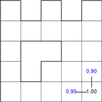
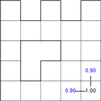

From Python to Numpy¶
Copyright (c) 2021 - Nicolas P. Rougier <Nicolas.Rougier@inria.fr> & Loïc Houpert <loic@lhoupert.fr>


There are already a fair number of books about Numpy (see Bibliography) and a legitimate question is to wonder if another book is really necessary. As you may have guessed by reading these lines, my personal answer is yes, mostly because I think there is room for a different approach concentrating on the migration from Python to Numpy through vectorization. There are a lot of techniques that you don’t find in books and such techniques are mostly learned through experience. The goal of this book is to explain some of these techniques and to provide an opportunity for making this experience in the process.
Website: http://www.labri.fr/perso/nrougier/from-python-to-numpy
Table of Contents
Disclaimer: All external pictures should have associated credits. If there are missing credits, please tell me, I will correct it. Similarly, all excerpts should be sourced (wikipedia mostly). If not, this is an error and I will correct it as soon as you tell me.
The book is open-access (you’re reading it) but if you insist on buying it, my advice would be to read it first and then decide if you still want to buy it (!?). If this is the case, you can do it via Paypal, price is free (5 euros, 10 euros, 25 euros). You won’t get anything extra but it might help me with the writing of the upcoming Python and OpenGL for Scientific Visualization (May 2018).
Preface¶
Contents
About the author¶
Nicolas P. Rougier is a full-time research scientist at Inria which is the French national institute for research in computer science and control. This is a public scientific and technological establishment (EPST) under the double supervision of the Research & Education Ministry, and the Ministry of Economy Finance and Industry. Nicolas P. Rougier is working within the Mnemosyne project which lies at the frontier between integrative and computational neuroscience in association with the Institute of Neurodegenerative Diseases, the Bordeaux laboratory for research in computer science (LaBRI), the University of Bordeaux and the national center for scientific research (CNRS).
He has been using Python for more than 15 years and NumPy for more than 10 years for modeling in neuroscience, machine learning and for advanced visualization (OpenGL). Nicolas P. Rougier is the author of several online resources and tutorials (Matplotlib, NumPy, OpenGL) and he’s teaching Python, NumPy and scientific visualization at the University of Bordeaux and in various conferences and schools worldwide (SciPy, EuroScipy, etc). He’s also the author of the popular article Ten Simple Rules for Better Figures and a popular matplotlib tutorial.
About this book¶
This book has been written in restructured text format and generated using the
rst2html.py command line available from the docutils python package.
If you want to rebuild the html output, from the top directory, type:
$ rst2html.py --link-stylesheet --cloak-email-addresses \
--toc-top-backlinks --stylesheet=book.css \
--stylesheet-dirs=. book.rst book.html
The sources are available from https://github.com/rougier/from-python-to-numpy.
About the Jupyter Book¶
html version
To generate the Jupyter Book from the top directory:
Install the most up to date version of jupyter-book:
$ pip install -U jupyter-book
Go to the root directory of the repository and run:
$ jupyter-book build . --path-output jupyter-book/.
Copy the data folder into the html directory:
$ cp -r data jupyter-book/_build/html/.
Open Jupyter-book at:
jupyter-book/_build/html/index.html
pdf version
To generate a pdf version of the book, you will need pyppeteer installed, then in the top directory, run:
$ jupyter-book build . --builder pdfhtml --path-output jupyter-book/.
The pdf version of the book is available at jupyter-book/_build/pdf/book.pdf
Prerequisites¶
This is not a Python beginner guide and you should have an intermediate level in Python and ideally a beginner level in NumPy. If this is not the case, have a look at the bibliography for a curated list of resources.
Conventions¶
We will use usual naming conventions. If not stated explicitly, each script should import NumPy, scipy and matplotlib as:
import numpy as np
import scipy as sp
import matplotlib.pyplot as plt
We’ll use up-to-date versions (at the date of writing, i.e. January, 2017) of the different packages:
Packages |
Version |
|---|---|
Python |
3.6.0 |
NumPy |
1.12.0 |
Scipy |
0.18.1 |
Matplotlib |
2.0.0 |
How to contribute¶
If you want to contribute to this book, you can:
Review chapters (please contact me)
Report issues (https://github.com/rougier/from-python-to-numpy/issues)
Suggest improvements (https://github.com/rougier/from-python-to-numpy/pulls)
Correct English (https://github.com/rougier/from-python-to-numpy/issues)
Design a better and more responsive html template for the book.
Star the project (https://github.com/rougier/from-python-to-numpy)
Publishing¶
If you’re an editor interested in publishing this book, you can contact me if you agree to have this version and all subsequent versions open access (i.e. online at this address), you know how to deal with restructured text (Word is not an option), you provide a real added-value as well as supporting services, and more importantly, you have a truly amazing latex book template (and be warned that I’m a bit picky about typography & design: Edward Tufte is my hero). Still here?
License¶
Book
This work is licensed under a Creative Commons Attribution-Non Commercial-Share Alike 4.0 International License. You are free to:
Share — copy and redistribute the material in any medium or format
Adapt — remix, transform, and build upon the material
The licensor cannot revoke these freedoms as long as you follow the license terms.
Code
The code is licensed under the OSI-approved BSD 2-Clause License.
Introduction¶
Contents
Simple example¶
Note
You can execute any code below from the code folder using the
regular python shell or from inside an IPython session or Jupyter notebook. In
such a case, you might want to use the magic command %timeit instead of the
custom one I wrote.
NumPy is all about vectorization. If you are familiar with Python, this is the main difficulty you’ll face because you’ll need to change your way of thinking and your new friends (among others) are named “vectors”, “arrays”, “views” or “ufuncs”.
Let’s take a very simple example, random walk. One possible object oriented
approach would be to define a RandomWalker class and write a walk
method that would return the current position after each (random) step. It’s nice,
it’s readable, but it is slow:
Object oriented approach
class RandomWalker:
def __init__(self):
self.position = 0
def walk(self, n):
self.position = 0
for i in range(n):
yield self.position
self.position += 2*random.randint(0, 1) - 1
walker = RandomWalker()
walk = [position for position in walker.walk(1000)]
Benchmarking gives us:
>>> from tools import timeit
>>> walker = RandomWalker()
>>> timeit("[position for position in walker.walk(n=10000)]", globals())
10 loops, best of 3: 15.7 msec per loop
Procedural approach
For such a simple problem, we can probably save the class definition and concentrate only on the walk method that computes successive positions after each random step.
def random_walk(n):
position = 0
walk = [position]
for i in range(n):
position += 2*random.randint(0, 1)-1
walk.append(position)
return walk
walk = random_walk(1000)
This new method saves some CPU cycles but not that much because this function is pretty much the same as in the object-oriented approach and the few cycles we saved probably come from the inner Python object-oriented machinery.
>>> from tools import timeit
>>> timeit("random_walk(n=10000)", globals())
10 loops, best of 3: 15.6 msec per loop
Vectorized approach
But we can do better using the itertools Python module that offers a set of functions creating iterators for efficient looping. If we observe that a random walk is an accumulation of steps, we can rewrite the function by first generating all the steps and accumulate them without any loop:
def random_walk_faster(n=1000):
from itertools import accumulate
# Only available from Python 3.6
steps = random.choices([-1,+1], k=n)
return [0]+list(accumulate(steps))
walk = random_walk_faster(1000)
In fact, we’ve just vectorized our function. Instead of looping for picking sequential steps and add them to the current position, we first generated all the steps at once and used the accumulate function to compute all the positions. We got rid of the loop and this makes things faster:
>>> from tools import timeit
>>> timeit("random_walk_faster(n=10000)", globals())
10 loops, best of 3: 2.21 msec per loop
We gained 85% of computation-time compared to the previous version, not so bad. But the advantage of this new version is that it makes NumPy vectorization super simple. We just have to translate itertools call into NumPy ones.
def random_walk_fastest(n=1000):
# No 's' in NumPy choice (Python offers choice & choices)
steps = np.random.choice([-1,+1], n)
return np.cumsum(steps)
walk = random_walk_fastest(1000)
Not too difficult, but we gained a factor 500x using NumPy:
>>> from tools import timeit
>>> timeit("random_walk_fastest(n=10000)", globals())
1000 loops, best of 3: 14 usec per loop
This book is about vectorization, be it at the code or problem level. We’ll see this difference is important before looking at custom vectorization.
Readability vs speed¶
Before heading to the next chapter, I would like to warn you about a potential problem you may encounter once you’ll have become familiar with NumPy. It is a very powerful library and you can make wonders with it but, most of the time, this comes at the price of readability. If you don’t comment your code at the time of writing, you won’t be able to tell what a function is doing after a few weeks (or possibly days). For example, can you tell what the two functions below are doing? Probably you can tell for the first one, but unlikely for the second (or your name is Jaime Fernández del Río and you don’t need to read this book).
def function_1(seq, sub):
return [i for i in range(len(seq) - len(sub) +1) if seq[i:i+len(sub)] == sub]
def function_2(seq, sub):
target = np.dot(sub, sub)
candidates = np.where(np.correlate(seq, sub, mode='valid') == target)[0]
check = candidates[:, np.newaxis] + np.arange(len(sub))
mask = np.all((np.take(seq, check) == sub), axis=-1)
return candidates[mask]
As you may have guessed, the second function is the vectorized-optimized-faster-NumPy version of the first function. It is 10 times faster than the pure Python version, but it is hardly readable.
Anatomy of an array¶
Contents
Introduction¶
As explained in the Preface, you should have a basic experience with NumPy to read this book. If this is not the case, you’d better start with a beginner tutorial before coming back here. Consequently I’ll only give here a quick reminder on the basic anatomy of NumPy arrays, especially regarding the memory layout, view, copy and the data type. They are critical notions to understand if you want your computation to benefit from NumPy philosophy.
Let’s consider a simple example where we want to clear all the values from an
array which has the dtype np.float32. How does one write it to maximize speed? The
below syntax is rather obvious (at least for those familiar with NumPy) but the
above question asks to find the fastest operation.
>>> Z = np.ones(4*1000000, np.float32)
>>> Z[...] = 0
If you look more closely at both the dtype and the size of the array, you can
observe that this array can be casted (i.e. viewed) into many other
“compatible” data types. By compatible, I mean that Z.size * Z.itemsize can
be divided by the new dtype itemsize.
>>> timeit("Z.view(np.float16)[...] = 0", globals())
100 loops, best of 3: 2.72 msec per loop
>>> timeit("Z.view(np.int16)[...] = 0", globals())
100 loops, best of 3: 2.77 msec per loop
>>> timeit("Z.view(np.int32)[...] = 0", globals())
100 loops, best of 3: 1.29 msec per loop
>>> timeit("Z.view(np.float32)[...] = 0", globals())
100 loops, best of 3: 1.33 msec per loop
>>> timeit("Z.view(np.int64)[...] = 0", globals())
100 loops, best of 3: 874 usec per loop
>>> timeit("Z.view(np.float64)[...] = 0", globals())
100 loops, best of 3: 865 usec per loop
>>> timeit("Z.view(np.complex128)[...] = 0", globals())
100 loops, best of 3: 841 usec per loop
>>> timeit("Z.view(np.int8)[...] = 0", globals())
100 loops, best of 3: 630 usec per loop
Interestingly enough, the obvious way of clearing all the values is not the
fastest. By casting the array into a larger data type such as np.float64, we
gained a 25% speed factor. But, by viewing the array as a byte array
(np.int8), we gained a 50% factor. The reason for such speedup are to be
found in the internal NumPy machinery and the compiler optimization. This
simple example illustrates the philosophy of NumPy as we’ll see in the next
section below.
Memory layout¶
The NumPy documentation defines the ndarray class very clearly:
An instance of class ndarray consists of a contiguous one-dimensional segment of computer memory (owned by the array, or by some other object), combined with an indexing scheme that maps N integers into the location of an item in the block.
Said differently, an array is mostly a contiguous block of memory whose parts can be accessed using an indexing scheme. Such indexing scheme is in turn defined by a shape and a data type and this is precisely what is needed when you define a new array:
Z = np.arange(9).reshape(3,3).astype(np.int16)
Here, we know that Z itemsize is 2 bytes (int16), the shape is (3,3) and
the number of dimensions is 2 (len(Z.shape)).
>>> print(Z.itemsize)
2
>>> print(Z.shape)
(3, 3)
>>> print(Z.ndim)
2
Furthermore and because Z is not a view, we can deduce the strides of the array that define the number of bytes to step in each dimension when traversing the array.
>>> strides = Z.shape[1]*Z.itemsize, Z.itemsize
>>> print(strides)
(6, 2)
>>> print(Z.strides)
(6, 2)
With all these information, we know how to access a specific item (designed by an index tuple) and more precisely, how to compute the start and end offsets:
offset_start = 0
for i in range(Z.ndim):
offset_start += Z.strides[i] * index[i]
offset_end = offset_start + Z.itemsize
Let’s see if this is correct using the tobytes conversion method:
>>> Z = np.arange(9).reshape(3, 3).astype(np.int16)
>>> index = 1, 1
>>> print(Z[index].tobytes())
b'\x04\x00'
>>> offset_start = 0
>>> for i in range(Z.ndim):
... offset_start += Z.strides[i] * index[i]
>>> offset_end = offset_start + Z.itemsize
>>> print(Z.tobytes()[offset_start:offset_end])
b'\x04\x00'
This array can be actually considered from different perspectives (i.e. layouts):
Item layout
shape[1]
(=3)
┌───────────┐
┌ ┌───┬───┬───┐ ┐
│ │ 0 │ 1 │ 2 │ │
│ ├───┼───┼───┤ │
shape[0] │ │ 3 │ 4 │ 5 │ │ len(Z)
(=3) │ ├───┼───┼───┤ │ (=3)
│ │ 6 │ 7 │ 8 │ │
└ └───┴───┴───┘ ┘
Flattened item layout
┌───┬───┬───┬───┬───┬───┬───┬───┬───┐
│ 0 │ 1 │ 2 │ 3 │ 4 │ 5 │ 6 │ 7 │ 8 │
└───┴───┴───┴───┴───┴───┴───┴───┴───┘
└───────────────────────────────────┘
Z.size
(=9)
Memory layout (C order, big endian)
strides[1]
(=2)
┌─────────────────────┐
┌ ┌──────────┬──────────┐ ┐
│ p+00: │ 00000000 │ 00000000 │ │
│ ├──────────┼──────────┤ │
│ p+02: │ 00000000 │ 00000001 │ │ strides[0]
│ ├──────────┼──────────┤ │ (=2x3)
│ p+04 │ 00000000 │ 00000010 │ │
│ ├──────────┼──────────┤ ┘
│ p+06 │ 00000000 │ 00000011 │
│ ├──────────┼──────────┤
Z.nbytes │ p+08: │ 00000000 │ 00000100 │
(=3x3x2) │ ├──────────┼──────────┤
│ p+10: │ 00000000 │ 00000101 │
│ ├──────────┼──────────┤
│ p+12: │ 00000000 │ 00000110 │
│ ├──────────┼──────────┤
│ p+14: │ 00000000 │ 00000111 │
│ ├──────────┼──────────┤
│ p+16: │ 00000000 │ 00001000 │
└ └──────────┴──────────┘
└─────────────────────┘
Z.itemsize
Z.dtype.itemsize
(=2)
If we now take a slice of Z, the result is a view of the base array Z:
V = Z[::2,::2]
Such view is specified using a shape, a dtype and strides because strides cannot be deduced anymore from the dtype and shape only:
Item layout
shape[1]
(=2)
┌───────────┐
┌ ┌───┬╌╌╌┬───┐ ┐
│ │ 0 │ │ 2 │ │ ┌───┬───┐
│ ├───┼╌╌╌┼───┤ │ │ 0 │ 2 │
shape[0] │ ╎ ╎ ╎ ╎ │ len(Z) → ├───┼───┤
(=2) │ ├───┼╌╌╌┼───┤ │ (=2) │ 6 │ 8 │
│ │ 6 │ │ 8 │ │ └───┴───┘
└ └───┴╌╌╌┴───┘ ┘
Flattened item layout
┌───┬╌╌╌┬───┬╌╌╌┬╌╌╌┬╌╌╌┬───┬╌╌╌┬───┐ ┌───┬───┬───┬───┐
│ 0 │ │ 2 │ ╎ ╎ │ 6 │ │ 8 │ → │ 0 │ 2 │ 6 │ 8 │
└───┴╌╌╌┴───┴╌╌╌┴╌╌╌┴╌╌╌┴───┴╌╌╌┴───┘ └───┴───┴───┴───┘
└─┬─┘ └─┬─┘ └─┬─┘ └─┬─┘
└───┬───┘ └───┬───┘
└───────────┬───────────┘
Z.size
(=4)
Memory layout (C order, big endian)
┌ ┌──────────┬──────────┐ ┐ ┐
┌─┤ p+00: │ 00000000 │ 00000000 │ │ │
│ └ ├──────────┼──────────┤ │ strides[1] │
┌─┤ p+02: │ │ │ │ (=4) │
│ │ ┌ ├──────────┼──────────┤ ┘ │
│ └─┤ p+04 │ 00000000 │ 00000010 │ │
│ └ ├──────────┼──────────┤ │ strides[0]
│ p+06: │ │ │ │ (=12)
│ ├──────────┼──────────┤ │
Z.nbytes ─┤ p+08: │ │ │ │
(=8) │ ├──────────┼──────────┤ │
│ p+10: │ │ │ │
│ ┌ ├──────────┼──────────┤ ┘
│ ┌─┤ p+12: │ 00000000 │ 00000110 │
│ │ └ ├──────────┼──────────┤
└─┤ p+14: │ │ │
│ ┌ ├──────────┼──────────┤
└─┤ p+16: │ 00000000 │ 00001000 │
└ └──────────┴──────────┘
└─────────────────────┘
Z.itemsize
Z.dtype.itemsize
(=2)
Views and copies¶
Views and copies are important concepts for the optimization of your numerical computations. Even if we’ve already manipulated them in the previous section, the whole story is a bit more complex.
Direct and indirect access¶
First, we have to distinguish between indexing and fancy indexing. The first will always return a view while the second will return a copy. This difference is important because in the first case, modifying the view modifies the base array while this is not true in the second case:
>>> Z = np.zeros(9)
>>> Z_view = Z[:3]
>>> Z_view[...] = 1
>>> print(Z)
[ 1. 1. 1. 0. 0. 0. 0. 0. 0.]
>>> Z = np.zeros(9)
>>> Z_copy = Z[[0,1,2]]
>>> Z_copy[...] = 1
>>> print(Z)
[ 0. 0. 0. 0. 0. 0. 0. 0. 0.]
Thus, if you need fancy indexing, it’s better to keep a copy of your fancy index (especially if it was complex to compute it) and to work with it:
>>> Z = np.zeros(9)
>>> index = [0,1,2]
>>> Z[index] = 1
>>> print(Z)
[ 1. 1. 1. 0. 0. 0. 0. 0. 0.]
If you are unsure if the result of your indexing is a view or a copy, you can
check what is the base of your result. If it is None, then you result is a
copy:
>>> Z = np.random.uniform(0,1,(5,5))
>>> Z1 = Z[:3,:]
>>> Z2 = Z[[0,1,2], :]
>>> print(np.allclose(Z1,Z2))
True
>>> print(Z1.base is Z)
True
>>> print(Z2.base is Z)
False
>>> print(Z2.base is None)
True
Note that some NumPy functions return a view when possible (e.g. ravel) while some others always return a copy (e.g. flatten):
>>> Z = np.zeros((5,5))
>>> Z.ravel().base is Z
True
>>> Z[::2,::2].ravel().base is Z
False
>>> Z.flatten().base is Z
False
Temporary copy¶
Copies can be made explicitly like in the previous section, but the most general case is the implicit creation of intermediate copies. This is the case when you are doing some arithmetic with arrays:
>>> X = np.ones(10, dtype=np.int)
>>> Y = np.ones(10, dtype=np.int)
>>> A = 2*X + 2*Y
In the example above, three intermediate arrays have been created. One for
holding the result of 2*X, one for holding the result of 2*Y and the last
one for holding the result of 2*X+2*Y. In this specific case, the arrays are
small enough and this does not really make a difference. However, if your
arrays are big, then you have to be careful with such expressions and wonder if
you can do it differently. For example, if only the final result matters and
you don’t need X nor Y afterwards, an alternate solution would be:
>>> X = np.ones(10, dtype=np.int)
>>> Y = np.ones(10, dtype=np.int)
>>> np.multiply(X, 2, out=X)
>>> np.multiply(Y, 2, out=Y)
>>> np.add(X, Y, out=X)
Using this alternate solution, no temporary array has been created. The problem is that there are many other cases where such copies need to be created and this impacts the performance like demonstrated in the example below:
>>> X = np.ones(1000000000, dtype=np.int)
>>> Y = np.ones(1000000000, dtype=np.int)
>>> timeit("X = X + 2.0*Y", globals())
100 loops, best of 3: 3.61 ms per loop
>>> timeit("X = X + 2*Y", globals())
100 loops, best of 3: 3.47 ms per loop
>>> timeit("X += 2*Y", globals())
100 loops, best of 3: 2.79 ms per loop
>>> timeit("np.add(X, Y, out=X); np.add(X, Y, out=X)", globals())
1000 loops, best of 3: 1.57 ms per loop
Conclusion¶
As a conclusion, we’ll make an exercise. Given two vectors Z1 and Z2. We
would like to know if Z2 is a view of Z1 and if yes, what is this view ?
>>> Z1 = np.arange(10)
>>> Z2 = Z1[1:-1:2]
╌╌╌┬───┬───┬───┬───┬───┬───┬───┬───┬───┬───┬╌╌
Z1 │ 0 │ 1 │ 2 │ 3 │ 4 │ 5 │ 6 │ 7 │ 8 │ 9 │
╌╌╌┴───┴───┴───┴───┴───┴───┴───┴───┴───┴───┴╌╌
╌╌╌╌╌╌╌┬───┬╌╌╌┬───┬╌╌╌┬───┬╌╌╌┬───┬╌╌╌╌╌╌╌╌╌╌
Z2 │ 1 │ │ 3 │ │ 5 │ │ 7 │
╌╌╌╌╌╌╌┴───┴╌╌╌┴───┴╌╌╌┴───┴╌╌╌┴───┴╌╌╌╌╌╌╌╌╌╌
First, we need to check if Z1 is the base of Z2
>>> print(Z2.base is Z1)
True
At this point, we know Z2 is a view of Z1, meaning Z2 can be expressed as
Z1[start:stop:step]. The difficulty is to find start, stop and
step. For the step, we can use the strides property of any array that
gives the number of bytes to go from one element to the other in each
dimension. In our case, and because both arrays are one-dimensional, we can
directly compare the first stride only:
>>> step = Z2.strides[0] // Z1.strides[0]
>>> print(step)
2
Next difficulty is to find the start and the stop indices. To do this, we
can take advantage of the byte_bounds method that returns a pointer to the
end-points of an array.
byte_bounds(Z1)[0] byte_bounds(Z1)[-1]
↓ ↓
╌╌╌┬───┬───┬───┬───┬───┬───┬───┬───┬───┬───┬╌╌
Z1 │ 0 │ 1 │ 2 │ 3 │ 4 │ 5 │ 6 │ 7 │ 8 │ 9 │
╌╌╌┴───┴───┴───┴───┴───┴───┴───┴───┴───┴───┴╌╌
byte_bounds(Z2)[0] byte_bounds(Z2)[-1]
↓ ↓
╌╌╌╌╌╌╌┬───┬╌╌╌┬───┬╌╌╌┬───┬╌╌╌┬───┬╌╌╌╌╌╌╌╌╌╌
Z2 │ 1 │ │ 3 │ │ 5 │ │ 7 │
╌╌╌╌╌╌╌┴───┴╌╌╌┴───┴╌╌╌┴───┴╌╌╌┴───┴╌╌╌╌╌╌╌╌╌╌
>>> offset_start = np.byte_bounds(Z2)[0] - np.byte_bounds(Z1)[0]
>>> print(offset_start) # bytes
8
>>> offset_stop = np.byte_bounds(Z2)[-1] - np.byte_bounds(Z1)[-1]
>>> print(offset_stop) # bytes
-16
Converting these offsets into indices is straightforward using the itemsize
and taking into account that the offset_stop is negative (end-bound of Z2
is logically smaller than end-bound of Z1 array). We thus need to add the
items size of Z1 to get the right end index.
>>> start = offset_start // Z1.itemsize
>>> stop = Z1.size + offset_stop // Z1.itemsize
>>> print(start, stop, step)
1, 8, 2
Last we test our results:
>>> print(np.allclose(Z1[start:stop:step], Z2))
True
As an exercise, you can improve this first and very simple implementation by taking into account:
Negative steps
Multi-dimensional arrays
Solution to the exercise.
Code vectorization¶
Contents
Introduction¶
Code vectorization means that the problem you’re trying to solve is inherently vectorizable and only requires a few NumPy tricks to make it faster. Of course it does not mean it is easy or straightforward, but at least it does not necessitate totally rethinking your problem (as it will be the case in the Problem vectorization chapter). Still, it may require some experience to see where code can be vectorized. Let’s illustrate this through a simple example where we want to sum up two lists of integers. One simple way using pure Python is:
def add_python(Z1,Z2):
return [z1+z2 for (z1,z2) in zip(Z1,Z2)]
This first naive solution can be vectorized very easily using NumPy:
def add_numpy(Z1,Z2):
return np.add(Z1,Z2)
Without any surprise, benchmarking the two approaches shows the second method is the fastest with one order of magnitude.
>>> Z1 = random.sample(range(1000), 100)
>>> Z2 = random.sample(range(1000), 100)
>>> timeit("add_python(Z1, Z2)", globals())
1000 loops, best of 3: 68 usec per loop
>>> timeit("add_numpy(Z1, Z2)", globals())
10000 loops, best of 3: 1.14 usec per loop
Not only is the second approach faster, but it also naturally adapts to the
shape of Z1 and Z2. This is the reason why we did not write Z1 + Z2
because it would not work if Z1 and Z2 were both lists. In the first Python
method, the inner + is interpreted differently depending on the nature of the
two objects such that if we consider two nested lists, we get the following
outputs:
>>> Z1 = [[1, 2], [3, 4]]
>>> Z2 = [[5, 6], [7, 8]]
>>> Z1 + Z2
[[1, 2], [3, 4], [5, 6], [7, 8]]
>>> add_python(Z1, Z2)
[[1, 2, 5, 6], [3, 4, 7, 8]]
>>> add_numpy(Z1, Z2)
[[ 6 8]
[10 12]]
The first method concatenates the two lists together, the second method concatenates the internal lists together and the last one computes what is (numerically) expected. As an exercise, you can rewrite the Python version such that it accepts nested lists of any depth.
Uniform vectorization¶
Uniform vectorization is the simplest form of vectorization where all the elements share the same computation at every time step with no specific processing for any element. One stereotypical case is the Game of Life that has been invented by John Conway (see below) and is one of the earliest examples of cellular automata. Those cellular automata can be conveniently regarded as an array of cells that are connected together with the notion of neighbours and their vectorization is straightforward. Let me first define the game and we’ll see how to vectorize it.
Figure 4.1
Conus textile snail exhibits a cellular automaton pattern on its shell. Image by Richard Ling, 2005.
{kind=link}

The Game of Life¶
Note
Excerpt from the Wikipedia entry on the Game of Life
The Game of Life is a cellular automaton devised by the British mathematician John Horton Conway in 1970. It is the best-known example of a cellular automaton. The “game” is actually a zero-player game, meaning that its evolution is determined by its initial state, needing no input from human players. One interacts with the Game of Life by creating an initial configuration and observing how it evolves.
The universe of the Game of Life is an infinite two-dimensional orthogonal grid of square cells, each of which is in one of two possible states, live or dead. Every cell interacts with its eight neighbours, which are the cells that are directly horizontally, vertically, or diagonally adjacent. At each step in time, the following transitions occur:
Any live cell with fewer than two live neighbours dies, as if by underpopulation.
Any live cell with more than three live neighbours dies, as if by overcrowding.
Any live cell with two or three live neighbours lives, unchanged, to the next generation.
Any dead cell with exactly three live neighbours becomes a live cell.
The initial pattern constitutes the ‘seed’ of the system. The first generation is created by applying the above rules simultaneously to every cell in the seed – births and deaths happen simultaneously, and the discrete moment at which this happens is sometimes called a tick. (In other words, each generation is a pure function of the one before.) The rules continue to be applied repeatedly to create further generations.
Python implementation¶
Note
We could have used the more efficient python array interface but it is more convenient to use the familiar list object.
In pure Python, we can code the Game of Life using a list of lists representing the board where cells are supposed to evolve. Such a board will be equipped with border of 0 that allows to accelerate things a bit by avoiding having specific tests for borders when counting the number of neighbours.
Z = [[0,0,0,0,0,0],
[0,0,0,1,0,0],
[0,1,0,1,0,0],
[0,0,1,1,0,0],
[0,0,0,0,0,0],
[0,0,0,0,0,0]]
Taking the border into account, counting neighbours then is straightforward:
def compute_neighbours(Z):
shape = len(Z), len(Z[0])
N = [[0,]*(shape[1]) for i in range(shape[0])]
for x in range(1,shape[0]-1):
for y in range(1,shape[1]-1):
N[x][y] = Z[x-1][y-1]+Z[x][y-1]+Z[x+1][y-1] \
+ Z[x-1][y] +Z[x+1][y] \
+ Z[x-1][y+1]+Z[x][y+1]+Z[x+1][y+1]
return N
To iterate one step in time, we then simply count the number of neighbours for each internal cell and we update the whole board according to the four aforementioned rules:
def iterate(Z):
N = compute_neighbours(Z)
for x in range(1,shape[0]-1):
for y in range(1,shape[1]-1):
if Z[x][y] == 1 and (N[x][y] < 2 or N[x][y] > 3):
Z[x][y] = 0
elif Z[x][y] == 0 and N[x][y] == 3:
Z[x][y] = 1
return Z
The figure below shows four iterations on a 4x4 area where the initial state is a glider, a structure discovered by Richard K. Guy in 1970.
Figure 4.2
The glider pattern is known to replicate itself one step diagonally in 4 iterations.

NumPy implementation¶
Starting from the Python version, the vectorization of the Game of Life requires two parts, one responsible for counting the neighbours and one responsible for enforcing the rules. Neighbour-counting is relatively easy if we remember we took care of adding a null border around the arena. By considering partial views of the arena we can actually access neighbours quite intuitively as illustrated below for the one-dimensional case:
┏━━━┳━━━┳━━━┓───┬───┐
Z[:-2] ┃ 0 ┃ 1 ┃ 1 ┃ 1 │ 0 │ (left neighbours)
┗━━━┻━━━┻━━━┛───┴───┘
↓︎
┌───┏━━━┳━━━┳━━━┓───┐
Z[1:-1] │ 0 ┃ 1 ┃ 1 ┃ 1 ┃ 0 │ (actual cells)
└───┗━━━┻━━━┻━━━┛───┘
↑
┌───┬───┏━━━┳━━━┳━━━┓
Z[+2:] │ 0 │ 1 ┃ 1 ┃ 1 ┃ 0 ┃ (right neighbours)
└───┴───┗━━━┻━━━┻━━━┛
Going to the two dimensional case requires just a bit of arithmetic to make sure to consider all the eight neighbours.
N = np.zeros(Z.shape, dtype=int)
N[1:-1,1:-1] += (Z[ :-2, :-2] + Z[ :-2,1:-1] + Z[ :-2,2:] +
Z[1:-1, :-2] + Z[1:-1,2:] +
Z[2: , :-2] + Z[2: ,1:-1] + Z[2: ,2:])
For the rule enforcement, we can write a first version using NumPy’s argwhere method that will give us the indices where a given condition is True.
# Flatten arrays
N_ = N.ravel()
Z_ = Z.ravel()
# Apply rules
R1 = np.argwhere( (Z_==1) & (N_ < 2) )
R2 = np.argwhere( (Z_==1) & (N_ > 3) )
R3 = np.argwhere( (Z_==1) & ((N_==2) | (N_==3)) )
R4 = np.argwhere( (Z_==0) & (N_==3) )
# Set new values
Z_[R1] = 0
Z_[R2] = 0
Z_[R3] = Z_[R3]
Z_[R4] = 1
# Make sure borders stay null
Z[0,:] = Z[-1,:] = Z[:,0] = Z[:,-1] = 0
Even if this first version does not use nested loops, it is far from optimal
because of the use of the four argwhere calls that may be quite slow. We can
instead factorize the rules into cells that will survive (stay at 1) and cells
that will give birth. For doing this, we can take advantage of NumPy boolean
capability and write quite naturally:
Note
We did not write Z = 0 as this would simply assign the value 0 to Z that
would then become a simple scalar.
birth = (N==3)[1:-1,1:-1] & (Z[1:-1,1:-1]==0)
survive = ((N==2) | (N==3))[1:-1,1:-1] & (Z[1:-1,1:-1]==1)
Z[...] = 0
Z[1:-1,1:-1][birth | survive] = 1
If you look at the birth and survive lines, you’ll see that these two
variables are arrays that can be used to set Z values to 1 after having
cleared it.
Figure 4.3
The Game of Life. Gray levels indicate how much a cell has been active in the past.
Exercise¶
Reaction and diffusion of chemical species can produce a variety of patterns, reminiscent of those often seen in nature. The Gray-Scott equations model such a reaction. For more information on this chemical system see the article Complex Patterns in a Simple System (John E. Pearson, Science, Volume 261, 1993). Let’s consider two chemical species \(U\) and \(V\) with respective concentrations \(u\) and \(v\) and diffusion rates \(Du\) and \(Dv\). \(V\) is converted into \(P\) with a rate of conversion \(k\). \(f\) represents the rate of the process that feeds \(U\) and drains \(U\), \(V\) and \(P\). This can be written as:
Chemical reaction |
Equations |
|---|---|
\(U + 2V \rightarrow 3V\) |
\(\dot{u} = Du \nabla^2 u - uv^2 + f(1-u)\) |
\(V \rightarrow P\) |
\(\dot{v} = Dv \nabla^2 v + uv^2 - (f+k)v\) |
Based on the Game of Life example, try to implement such reaction-diffusion system. Here is a set of interesting parameters to test:
Name |
Du |
Dv |
f |
k |
|---|---|---|---|---|
Bacteria 1 |
0.16 |
0.08 |
0.035 |
0.065 |
Bacteria 2 |
0.14 |
0.06 |
0.035 |
0.065 |
Coral |
0.16 |
0.08 |
0.060 |
0.062 |
Fingerprint |
0.19 |
0.05 |
0.060 |
0.062 |
Spirals |
0.10 |
0.10 |
0.018 |
0.050 |
Spirals Dense |
0.12 |
0.08 |
0.020 |
0.050 |
Spirals Fast |
0.10 |
0.16 |
0.020 |
0.050 |
Unstable |
0.16 |
0.08 |
0.020 |
0.055 |
Worms 1 |
0.16 |
0.08 |
0.050 |
0.065 |
Worms 2 |
0.16 |
0.08 |
0.054 |
0.063 |
Zebrafish |
0.16 |
0.08 |
0.035 |
0.060 |
The figure below shows some animations of the model for a specific set of parameters.
Figure 4.4
Reaction-diffusion Gray-Scott model. From left to right, Bacteria 1, Coral and Spiral Dense.
Sources¶
gray_scott.py (solution to the exercise)
References¶
John Conway new solitaire game “life”, Martin Gardner, Scientific American 223, 1970.
Gray Scott Model of Reaction Diffusion, Abelson, Adams, Coore, Hanson, Nagpal, Sussman, 1997.
Reaction-Diffusion by the Gray-Scott Model, Robert P. Munafo, 1996.
Temporal vectorization¶
The Mandelbrot set is the set of complex numbers \(c\) for which the function \(f_c(z) = z^2+ c\) does not diverge when iterated from \(z=0\), i.e., for which the sequence \(f_c(0), f_c(f_c(0))\), etc., remains bounded in absolute value. It is very easy to compute, but it can take a very long time because you need to ensure a given number does not diverge. This is generally done by iterating the computation up to a maximum number of iterations, after which, if the number is still within some bounds, it is considered non-divergent. Of course, the more iterations you do, the more precision you get.
Figure 4.5
Romanesco broccoli, showing self-similar form approximating a natural fractal. Image by Jon Sullivan, 2004.
{kind=link}

Python implementation¶
A pure python implementation is written as:
def mandelbrot_python(xmin, xmax, ymin, ymax, xn, yn, maxiter, horizon=2.0):
def mandelbrot(z, maxiter):
c = z
for n in range(maxiter):
if abs(z) > horizon:
return n
z = z*z + c
return maxiter
r1 = [xmin+i*(xmax-xmin)/xn for i in range(xn)]
r2 = [ymin+i*(ymax-ymin)/yn for i in range(yn)]
return [mandelbrot(complex(r, i),maxiter) for r in r1 for i in r2]
The interesting (and slow) part of this code is the mandelbrot function that
actually computes the sequence \(f_c(f_c(f_c ...)))\). The vectorization of
such code is not totally straightforward because the internal return implies a
differential processing of the element. Once it has diverged, we don’t need to
iterate any more and we can safely return the iteration count at
divergence. The problem is to then do the same in NumPy. But how?
NumPy implementation¶
The trick is to search at each iteration values that have not yet
diverged and update relevant information for these values and only
these values. Because we start from \(Z = 0\), we know that each
value will be updated at least once (when they’re equal to \(0\),
they have not yet diverged) and will stop being updated as soon as
they’ve diverged. To do that, we’ll use NumPy fancy indexing with the
less(x1,x2) function that return the truth value of (x1 < x2)
element-wise.
def mandelbrot_numpy(xmin, xmax, ymin, ymax, xn, yn, maxiter, horizon=2.0):
X = np.linspace(xmin, xmax, xn, dtype=np.float32)
Y = np.linspace(ymin, ymax, yn, dtype=np.float32)
C = X + Y[:,None]*1j
N = np.zeros(C.shape, dtype=int)
Z = np.zeros(C.shape, np.complex64)
for n in range(maxiter):
I = np.less(abs(Z), horizon)
N[I] = n
Z[I] = Z[I]**2 + C[I]
N[N == maxiter-1] = 0
return Z, N
Here is the benchmark:
>>> xmin, xmax, xn = -2.25, +0.75, int(3000/3)
>>> ymin, ymax, yn = -1.25, +1.25, int(2500/3)
>>> maxiter = 200
>>> timeit("mandelbrot_python(xmin, xmax, ymin, ymax, xn, yn, maxiter)", globals())
1 loops, best of 3: 6.1 sec per loop
>>> timeit("mandelbrot_numpy(xmin, xmax, ymin, ymax, xn, yn, maxiter)", globals())
1 loops, best of 3: 1.15 sec per loop
Faster NumPy implementation¶
The gain is roughly a 5x factor, not as much as we could have
expected. Part of the problem is that the np.less function implies
\(xn \times yn\) tests at every iteration while we know that some
values have already diverged. Even if these tests are performed at the
C level (through NumPy), the cost is nonetheless
significant. Another approach proposed by Dan Goodman is to work on a dynamic array at
each iteration that stores only the points which have not yet
diverged. It requires more lines but the result is faster and leads to
a 10x factor speed improvement compared to the Python version.
def mandelbrot_numpy_2(xmin, xmax, ymin, ymax, xn, yn, itermax, horizon=2.0):
Xi, Yi = np.mgrid[0:xn, 0:yn]
Xi, Yi = Xi.astype(np.uint32), Yi.astype(np.uint32)
X = np.linspace(xmin, xmax, xn, dtype=np.float32)[Xi]
Y = np.linspace(ymin, ymax, yn, dtype=np.float32)[Yi]
C = X + Y*1j
N_ = np.zeros(C.shape, dtype=np.uint32)
Z_ = np.zeros(C.shape, dtype=np.complex64)
Xi.shape = Yi.shape = C.shape = xn*yn
Z = np.zeros(C.shape, np.complex64)
for i in range(itermax):
if not len(Z): break
# Compute for relevant points only
np.multiply(Z, Z, Z)
np.add(Z, C, Z)
# Failed convergence
I = abs(Z) > horizon
N_[Xi[I], Yi[I]] = i+1
Z_[Xi[I], Yi[I]] = Z[I]
# Keep going with those who have not diverged yet
np.negative(I,I)
Z = Z[I]
Xi, Yi = Xi[I], Yi[I]
C = C[I]
return Z_.T, N_.T
The benchmark gives us:
>>> timeit("mandelbrot_numpy_2(xmin, xmax, ymin, ymax, xn, yn, maxiter)", globals())
1 loops, best of 3: 510 msec per loop
Visualization¶
In order to visualize our results, we could directly display the N array
using the matplotlib imshow command, but this would result in a “banded” image
that is a known consequence of the escape count algorithm that we’ve been
using. Such banding can be eliminated by using a fractional escape count. This
can be done by measuring how far the iterated point landed outside of the
escape cutoff. See the reference below about the renormalization of the escape
count. Here is a picture of the result where we use recount normalization,
and added a power normalized color map (gamma=0.3) as well as light shading.
Figure 4.6
The Mandelbrot as rendered by matplotlib using recount normalization, power normalized color map (gamma=0.3) and light shading.
{kind=link}
Exercise¶
Note
You should look at the ufunc.reduceat method that performs a (local) reduce with specified slices over a single axis.
We now want to measure the fractal dimension of the Mandelbrot set using the Minkowski–Bouligand dimension. To do that, we need to do box-counting with a decreasing box size (see figure below). As you can imagine, we cannot use pure Python because it would be way too slow. The goal of the exercise is to write a function using NumPy that takes a two-dimensional float array and returns the dimension. We’ll consider values in the array to be normalized (i.e. all values are between 0 and 1).
Figure 4.7
The Minkowski–Bouligand dimension of the Great Britain coastlines is approximately 1.24.

Sources¶
fractal_dimension.py (solution to the exercise)
References¶
How To Quickly Compute the Mandelbrot Set in Python, Jean Francois Puget, 2015.
My Christmas Gift: Mandelbrot Set Computation In Python, Jean Francois Puget, 2015.
Fast fractals with Python and NumPy, Dan Goodman, 2009.
Renormalizing the Mandelbrot Escape, Linas Vepstas, 1997.
Spatial vectorization¶
Spatial vectorization refers to a situation where elements share the same computation but are in interaction with only a subgroup of other elements. This was already the case for the game of life example, but in some situations there is an added difficulty because the subgroup is dynamic and needs to be updated at each iteration. This the case, for example, in particle systems where particles interact mostly with local neighbours. This is also the case for “boids” that simulate flocking behaviors.
Figure 4.8
Flocking birds are an example of self-organization in biology. Image by Christoffer A Rasmussen, 2012.
{kind=link}

Boids¶
Note
Excerpt from the Wikipedia entry Boids
Boids is an artificial life program, developed by Craig Reynolds in 1986, which simulates the flocking behaviour of birds. The name “boid” corresponds to a shortened version of “bird-oid object”, which refers to a bird-like object.
As with most artificial life simulations, Boids is an example of emergent behavior; that is, the complexity of Boids arises from the interaction of individual agents (the boids, in this case) adhering to a set of simple rules. The rules applied in the simplest Boids world are as follows:
separation: steer to avoid crowding local flock-mates
alignment: steer towards the average heading of local flock-mates
cohesion: steer to move toward the average position (center of mass) of local flock-mates
Figure 4.9
Boids are governed by a set of three local rules (separation, cohesion and alignment) that serve as computing velocity and acceleration.

Python implementation¶
Since each boid is an autonomous entity with several properties such as position and velocity, it seems natural to start by writing a Boid class:
import math
import random
from vec2 import vec2
class Boid:
def __init__(self, x=0, y=0):
self.position = vec2(x, y)
angle = random.uniform(0, 2*math.pi)
self.velocity = vec2(math.cos(angle), math.sin(angle))
self.acceleration = vec2(0, 0)
The vec2 object is a very simple class that handles all common vector
operations with 2 components. It will save us some writing in the main Boid
class. Note that there are some vector packages in the Python Package Index, but
that would be overkill for such a simple example.
Boid is a difficult case for regular Python because a boid has interaction with local neighbours. However, and because boids are moving, to find such local neighbours requires computing at each time step the distance to each and every other boid in order to sort those which are in a given interaction radius. The prototypical way of writing the three rules is thus something like:
def separation(self, boids):
count = 0
for other in boids:
d = (self.position - other.position).length()
if 0 < d < desired_separation:
count += 1
...
if count > 0:
...
def alignment(self, boids): ...
def cohesion(self, boids): ...
Full sources are given in the references section below, it would be too long to describe it here and there is no real difficulty.
To complete the picture, we can also create a Flock object:
class Flock:
def __init__(self, count=150):
self.boids = []
for i in range(count):
boid = Boid()
self.boids.append(boid)
def run(self):
for boid in self.boids:
boid.run(self.boids)
Using this approach, we can have up to 50 boids until the computation time becomes too slow for a smooth animation. As you may have guessed, we can do much better using NumPy, but let me first point out the main problem with this Python implementation. If you look at the code, you will certainly notice there is a lot of redundancy. More precisely, we do not exploit the fact that the Euclidean distance is reflexive, that is, \(|x-y| = |y-x|\). In this naive Python implementation, each rule (function) computes \(n^2\) distances while \(\frac{n^2}{2}\) would be sufficient if properly cached. Furthermore, each rule re-computes every distance without caching the result for the other functions. In the end, we are computing \(3n^2\) distances instead of \(\frac{n^2}{2}\).
NumPy implementation¶
As you might expect, the NumPy implementation takes a different approach and
we’ll gather all our boids into a position array and a velocity array:
n = 500
velocity = np.zeros((n, 2), dtype=np.float32)
position = np.zeros((n, 2), dtype=np.float32)
The first step is to compute the local neighborhood for all boids, and for this we need to compute all paired distances:
dx = np.subtract.outer(position[:, 0], position[:, 0])
dy = np.subtract.outer(position[:, 1], position[:, 1])
distance = np.hypot(dx, dy)
We could have used the scipy cdist
but we’ll need the dx and dy arrays later. Once those have been computed,
it is faster to use the hypot
method. Note that distance shape is (n, n) and each line relates to one boid,
i.e. each line gives the distance to all other boids (including self).
From theses distances, we can now compute the local neighborhood for each of the three rules, taking advantage of the fact that we can mix them together. We can actually compute a mask for distances that are strictly positive (i.e. have no self-interaction) and multiply it with other distance masks.
Note
If we suppose that boids cannot occupy the same position, how can you
compute mask_0 more efficiently?
mask_0 = (distance > 0)
mask_1 = (distance < 25)
mask_2 = (distance < 50)
mask_1 *= mask_0
mask_2 *= mask_0
mask_3 = mask_2
Then, we compute the number of neighbours within the given radius and we ensure it is at least 1 to avoid division by zero.
mask_1_count = np.maximum(mask_1.sum(axis=1), 1)
mask_2_count = np.maximum(mask_2.sum(axis=1), 1)
mask_3_count = mask_2_count
We’re ready to write our three rules:
Alignment
# Compute the average velocity of local neighbours
target = np.dot(mask, velocity)/count.reshape(n, 1)
# Normalize the result
norm = np.sqrt((target*target).sum(axis=1)).reshape(n, 1)
np.divide(target, norm, out=target, where=norm != 0)
# Alignment at constant speed
target *= max_velocity
# Compute the resulting steering
alignment = target - velocity
Cohesion
# Compute the gravity center of local neighbours
center = np.dot(mask, position)/count.reshape(n, 1)
# Compute direction toward the center
target = center - position
# Normalize the result
norm = np.sqrt((target*target).sum(axis=1)).reshape(n, 1)
np.divide(target, norm, out=target, where=norm != 0)
# Cohesion at constant speed (max_velocity)
target *= max_velocity
# Compute the resulting steering
cohesion = target - velocity
Separation
# Compute the repulsion force from local neighbours
repulsion = np.dstack((dx, dy))
# Force is inversely proportional to the distance
np.divide(repulsion, distance.reshape(n, n, 1)**2, out=repulsion,
where=distance.reshape(n, n, 1) != 0)
# Compute direction away from others
target = (repulsion*mask.reshape(n, n, 1)).sum(axis=1)/count.reshape(n, 1)
# Normalize the result
norm = np.sqrt((target*target).sum(axis=1)).reshape(n, 1)
np.divide(target, norm, out=target, where=norm != 0)
# Separation at constant speed (max_velocity)
target *= max_velocity
# Compute the resulting steering
separation = target - velocity
All three resulting steerings (separation, alignment & cohesion) need to be limited in magnitude. We leave this as an exercise for the reader. Combination of these rules is straightforward as well as the resulting update of velocity and position:
acceleration = 1.5 * separation + alignment + cohesion
velocity += acceleration
position += velocity
We finally visualize the result using a custom oriented scatter plot.
Figure 4.10
Boids is an artificial life program, developed by Craig Reynolds in 1986, which simulates the flocking behaviour of birds.
Exercise¶
We are now ready to visualize our boids. The easiest way is to use the
matplotlib animation function and a scatter plot. Unfortunately, scatters
cannot be individually oriented and we need to make our own objects using a
matplotlib PathCollection. A simple triangle path can be defined as:
v= np.array([(-0.25, -0.25),
( 0.00, 0.50),
( 0.25, -0.25),
( 0.00, 0.00)])
c = np.array([Path.MOVETO,
Path.LINETO,
Path.LINETO,
Path.CLOSEPOLY])
This path can be repeated several times inside an array and each triangle can be made independent.
n = 500
vertices = np.tile(v.reshape(-1), n).reshape(n, len(v), 2)
codes = np.tile(c.reshape(-1), n)
We now have a (n,4,2) array for vertices and a (n,4) array for codes
representing n boids. We are interested in manipulating the vertices array to
reflect the translation, scaling and rotation of each of the n boids.
Note
Rotate is really tricky.
How would you write the translate, scale and rotate functions ?
Sources¶
boid_numpy.py (solution to the exercise)
References¶
Flocking, Daniel Shiffman, 2010.
Flocks, herds and schools: A distributed behavioral model, Craig Reynolds, SIGGRAPH, 1987
Conclusion¶
We’ve seen through these examples three forms of code vectorization:
Uniform vectorization where elements share the same computation unconditionally and for the same duration.
Temporal vectorization where elements share the same computation but necessitate a different number of iterations.
Spatial vectorization where elements share the same computation but on dynamic spatial arguments.
And there are probably many more forms of such direct code vectorization. As explained before, this kind of vectorization is one of the most simple even though we’ve seen it can be really tricky to implement and requires some experience, some help or both. For example, the solution to the boids exercise was provided by Divakar on stack overflow after having explained my problem.
Problem vectorization¶
Contents
Introduction¶
Problem vectorization is much harder than code vectorization because it means that you fundamentally have to rethink your problem in order to make it vectorizable. Most of the time this means you have to use a different algorithm to solve your problem or even worse… to invent a new one. The difficulty is thus to think out-of-the-box.
To illustrate this, let’s consider a simple problem where given two vectors X and
Y, we want to compute the sum of X[i]*Y[j] for all pairs of indices i,
j. One simple and obvious solution is to write:
def compute_python(X, Y):
result = 0
for i in range(len(X)):
for j in range(len(Y)):
result += X[i] * Y[j]
return result
However, this first and naïve implementation requires two loops and we already know it will be slow:
>>> X = np.arange(1000)
>>> timeit("compute_python(X,X)")
1 loops, best of 3: 0.274481 sec per loop
How to vectorize the problem then? If you remember your linear algebra course,
you may have identified the expression X[i] * Y[j] to be very similar to a
matrix product expression. So maybe we could benefit from some NumPy
speedup. One wrong solution would be to write:
def compute_numpy_wrong(X, Y):
return (X*Y).sum()
This is wrong because the X*Y expression will actually compute a new vector
Z such that Z[i] = X[i] * Y[i] and this is not what we want. Instead, we
can exploit NumPy broadcasting by first reshaping the two vectors and then
multiply them:
def compute_numpy(X, Y):
Z = X.reshape(len(X),1) * Y.reshape(1,len(Y))
return Z.sum()
Here we have Z[i,j] == X[i,0]*Y[0,j] and if we take the sum over each elements of
Z, we get the expected result. Let’s see how much speedup we gain in the
process:
>>> X = np.arange(1000)
>>> timeit("compute_numpy(X,X)")
10 loops, best of 3: 0.00157926 sec per loop
This is better, we gained a factor of ~150. But we can do much better.
If you look again and more closely at the pure Python version, you can see that
the inner loop is using X[i] that does not depend on the j index, meaning
it can be removed from the inner loop. Code can be rewritten as:
def compute_numpy_better_1(X, Y):
result = 0
for i in range(len(X)):
Ysum = 0
for j in range(len(Y)):
Ysum += Y[j]
result += X[i]*Ysum
return result
But since the inner loop does not depend on the i index, we might as well
compute it only once:
def compute_numpy_better_2(X, Y):
result = 0
Ysum = 0
for j in range(len(Y)):
Ysum += Y[j]
for i in range(len(X)):
result += X[i]*Ysum
return result
Not so bad, we have removed the inner loop, transforming \(O(n^2)\) complexity into \(O(n)\) complexity. Using the same approach, we can now write:
def compute_numpy_better_3(x, y):
Ysum = 0
for j in range(len(Y)):
Ysum += Y[j]
Xsum = 0
for i in range(len(X)):
Xsum += X[i]
return Xsum*Ysum
Finally, having realized we only need the product of the sum over X and Y
respectively, we can benefit from the np.sum function and write:
def compute_numpy_better(x, y):
return np.sum(y) * np.sum(x)
It is shorter, clearer and much, much faster:
>>> X = np.arange(1000)
>>> timeit("compute_numpy_better(X,X)")
1000 loops, best of 3: 3.97208e-06 sec per loop
We have indeed reformulated our problem, taking advantage of the fact that \(\sum_{ij}{X_i}{Y_j} = \sum_{i}X_i \sum_{j}Y_j$\) and we’ve learned in the meantime that there are two kinds of vectorization: code vectorization and problem vectorization. The latter is the most difficult but the most important because this is where you can expect huge gains in speed. In this simple example, we gain a factor of 150 with code vectorization but we gained a factor of 70,000 with problem vectorization, just by writing our problem differently (even though you cannot expect such a huge speedup in all situations). However, code vectorization remains an important factor, and if we rewrite the last solution the Python way, the improvement is good but not as much as in the NumPy version:
def compute_python_better(x, y):
return sum(x)*sum(y)
This new Python version is much faster than the previous Python version, but still, it is 50 times slower than the NumPy version:
>>> X = np.arange(1000)
>>> timeit("compute_python_better(X,X)")
1000 loops, best of 3: 0.000155677 sec per loop
Path finding¶
Path finding is all about finding the shortest path in a graph. This can be split in two distinct problems: to find a path between two nodes in a graph and to find the shortest path. We’ll illustrate this through path finding in a maze. The first task is thus to build a maze.
Figure 5.1
A hedge maze at Longleat stately home in England. Image by Prince Rurik, 2005.
{kind=link}
{kind=link}
Building a maze¶
There exist many maze generation algorithms but I tend to
prefer the one I’ve been using for several years but whose origin is unknown to
me. I’ve added the code in the cited wikipedia entry. Feel free to complete it
if you know the original author. This algorithm works by creating n (density)
islands of length p (complexity). An island is created by choosing a random
starting point with odd coordinates, then a random direction is chosen. If the
cell two steps in a given direction is free, then a wall is added at both one step
and two steps in this direction. The process is iterated for n steps for this
island. p islands are created. n and p are expressed as float to adapt them to
the size of the maze. With a low complexity, islands are very small and the
maze is easy to solve. With low density, the maze has more “big empty rooms”.
def build_maze(shape=(65, 65), complexity=0.75, density=0.50):
# Only odd shapes
shape = ((shape[0]//2)*2+1, (shape[1]//2)*2+1)
# Adjust complexity and density relatively to maze size
n_complexity = int(complexity*(shape[0]+shape[1]))
n_density = int(density*(shape[0]*shape[1]))
# Build actual maze
Z = np.zeros(shape, dtype=bool)
# Fill borders
Z[0, :] = Z[-1, :] = Z[:, 0] = Z[:, -1] = 1
# Islands starting point with a bias in favor of border
P = np.random.normal(0, 0.5, (n_density, 2))
P = 0.5 - np.maximum(-0.5, np.minimum(P, +0.5))
P = (P*[shape[1], shape[0]]).astype(int)
P = 2*(P//2)
# Create islands
for i in range(n_density):
# Test for early stop: if all starting point are busy, this means we
# won't be able to connect any island, so we stop.
T = Z[2:-2:2, 2:-2:2]
if T.sum() == T.size: break
x, y = P[i]
Z[y, x] = 1
for j in range(n_complexity):
neighbours = []
if x > 1: neighbours.append([(y, x-1), (y, x-2)])
if x < shape[1]-2: neighbours.append([(y, x+1), (y, x+2)])
if y > 1: neighbours.append([(y-1, x), (y-2, x)])
if y < shape[0]-2: neighbours.append([(y+1, x), (y+2, x)])
if len(neighbours):
choice = np.random.randint(len(neighbours))
next_1, next_2 = neighbours[choice]
if Z[next_2] == 0:
Z[next_1] = 1
Z[next_2] = 1
y, x = next_2
else:
break
return Z
Here is an animation showing the generation process.
Figure 5.2
Progressive maze building with complexity and density control.
Breadth-first¶
The breadth-first (as well as depth-first) search algorithm addresses the problem of finding a path between two nodes by examining all possibilities starting from the root node and stopping as soon as a solution has been found (destination node has been reached). This algorithm runs in linear time with complexity in \(O(|V|+|E|)\) (where \(V\) is the number of vertices, and \(E\) is the number of edges). Writing such an algorithm is not especially difficult, provided you have the right data structure. In our case, the array representation of the maze is not the most well-suited and we need to transform it into an actual graph as proposed by Valentin Bryukhanov.
def build_graph(maze):
height, width = maze.shape
graph = {(i, j): [] for j in range(width)
for i in range(height) if not maze[i][j]}
for row, col in graph.keys():
if row < height - 1 and not maze[row + 1][col]:
graph[(row, col)].append(("S", (row + 1, col)))
graph[(row + 1, col)].append(("N", (row, col)))
if col < width - 1 and not maze[row][col + 1]:
graph[(row, col)].append(("E", (row, col + 1)))
graph[(row, col + 1)].append(("W", (row, col)))
return graph
Note
If we had used the depth-first algorithm, there is no guarantee to find the shortest path, only to find a path (if it exists).
Once this is done, writing the breadth-first algorithm is straightforward. We start from the starting node and we visit nodes at the current depth only (breadth-first, remember?) and we iterate the process until reaching the final node, if possible. The question is then: do we get the shortest path exploring the graph this way? In this specific case, “yes”, because we don’t have an edge-weighted graph, i.e. all the edges have the same weight (or cost).
def breadth_first(maze, start, goal):
queue = deque([([start], start)])
visited = set()
graph = build_graph(maze)
while queue:
path, current = queue.popleft()
if current == goal:
return np.array(path)
if current in visited:
continue
visited.add(current)
for direction, neighbour in graph[current]:
p = list(path)
p.append(neighbour)
queue.append((p, neighbour))
return None
Bellman-Ford method¶
The Bellman–Ford algorithm is an algorithm that is able to find the optimal path in a graph using a diffusion process. The optimal path is found by ascending the resulting gradient. This algorithm runs in quadratic time \(O(|V||E|)\) (where \(V\) is the number of vertices, and \(E\) is the number of edges). However, in our simple case, we won’t hit the worst case scenario. The algorithm is illustrated below (reading from left to right, top to bottom). Once this is done, we can ascend the gradient from the starting node. You can check on the figure that this leads to the shortest path.
Figure 5.3
Value iteration algorithm on a simple maze. Once entrance has been reached, it is easy to find the shortest path by ascending the value gradient.
 

{kind=link}
{kind=link}
{kind=link}


{kind=link}


We start by setting the exit node to the value 1, while every other node is
set to 0, except the walls. Then we iterate a process such that each
cell’s new value is computed as the maximum value between the current cell value
and the discounted (gamma=0.9 in the case below) 4 neighbour values. The
process starts as soon as the starting node value becomes strictly positive.
The NumPy implementation is straightforward if we take advantage of the
generic_filter (from scipy.ndimage) for the diffusion process:
def diffuse(Z):
# North, West, Center, East, South
return max(gamma*Z[0], gamma*Z[1], Z[2], gamma*Z[3], gamma*Z[4])
# Build gradient array
G = np.zeros(Z.shape)
# Initialize gradient at the entrance with value 1
G[start] = 1
# Discount factor
gamma = 0.99
# We iterate until value at exit is > 0. This requires the maze
# to have a solution or it will be stuck in the loop.
while G[goal] == 0.0:
G = Z * generic_filter(G, diffuse, footprint=[[0, 1, 0],
[1, 1, 1],
[0, 1, 0]])
But in this specific case, it is rather slow. We’d better cook-up our own solution, reusing part of the game of life code:
# Build gradient array
G = np.zeros(Z.shape)
# Initialize gradient at the entrance with value 1
G[start] = 1
# Discount factor
gamma = 0.99
# We iterate until value at exit is > 0. This requires the maze
# to have a solution or it will be stuck in the loop.
G_gamma = np.empty_like(G)
while G[goal] == 0.0:
np.multiply(G, gamma, out=G_gamma)
N = G_gamma[0:-2,1:-1]
W = G_gamma[1:-1,0:-2]
C = G[1:-1,1:-1]
E = G_gamma[1:-1,2:]
S = G_gamma[2:,1:-1]
G[1:-1,1:-1] = Z[1:-1,1:-1]*np.maximum(N,np.maximum(W,
np.maximum(C,np.maximum(E,S))))
Once this is done, we can ascend the gradient to find the shortest path as illustrated on the figure below:
Figure 5.4
Path finding using the Bellman-Ford algorithm. Gradient colors indicate propagated values from the end-point of the maze (bottom-right). Path is found by ascending gradient from the goal.

References¶
Labyrinth Algorithms, Valentin Bryukhanov, 2014.
Fluid Dynamics¶
Figure 5.5
Hydrodynamic flow at two different zoom levels, Neckar river, Heidelberg, Germany. Image by Steven Mathey, 2012.
{kind=link}
{kind=link}
Lagrangian vs Eulerian method¶
Note
Excerpt from the Wikipedia entry on the Lagrangian and Eulerian specification
In classical field theory, the Lagrangian specification of the field is a way of looking at fluid motion where the observer follows an individual fluid parcel as it moves through space and time. Plotting the position of an individual parcel through time gives the pathline of the parcel. This can be visualized as sitting in a boat and drifting down a river.
The Eulerian specification of the flow field is a way of looking at fluid motion that focuses on specific locations in the space through which the fluid flows as time passes. This can be visualized by sitting on the bank of a river and watching the water pass the fixed location.
In other words, in the Eulerian case, you divide a portion of space into cells and each cell contains a velocity vector and other information, such as density and temperature. In the Lagrangian case, we need particle-based physics with dynamic interactions and generally we need a high number of particles. Both methods have advantages and disadvantages and the choice between the two methods depends on the nature of your problem. Of course, you can also mix the two methods into a hybrid method.
However, the biggest problem for particle-based simulation is that particle interaction requires finding neighbouring particles and this has a cost as we’ve seen in the boids case. If we target Python and NumPy only, it is probably better to choose the Eulerian method since vectorization will be almost trivial compared to the Lagrangian method.
NumPy implementation¶
I won’t explain all the theory behind computational fluid dynamics because first, I cannot (I’m not an expert at all in this domain) and there are many resources online that explain this nicely (have a look at references below, especially tutorial by L. Barba). Why choose a computational fluid as an example then? Because results are (almost) always beautiful and fascinating. I couldn’t resist (look at the movie below).
We’ll further simplify the problem by implementing a method from computer graphics where the goal is not correctness but convincing behavior. Jos Stam wrote a very nice article for SIGGRAPH 1999 describing a technique to have stable fluids over time (i.e. whose solution in the long term does not diverge). Alberto Santini wrote a Python replication a long time ago (using numarray!) such that I only had to adapt it to modern NumPy and accelerate it a bit using modern NumPy tricks.
I won’t comment the code since it would be too long, but you can read the original paper as well as the explanation by Philip Rideout on his blog. Below are some movies I’ve made using this technique.
Figure 5.6
Smoke simulation using the stable fluids algorithm by Jos Stam. Right most video comes from the glumpy package and is using the GPU (framebuffer operations, i.e. no OpenCL nor CUDA) for faster computations.
References¶
12 Steps to Navier-Stokes, Lorena Barba, 2013.
Stable Fluids, Jos Stam, 1999.
Simple Fluid Simulation, Philip Rideout, 2010
Fast Fluid Dynamics Simulation on the GPU, Mark Harris, 2004.
Animating Sand as a Fluid, Yongning Zhu & Robert Bridson, 2005.
Blue noise sampling¶
Blue noise refers to sample sets that have random and yet uniform distributions with absence of any spectral bias. Such noise is very useful in a variety of graphics applications like rendering, dithering, stippling, etc. Many different methods have been proposed to achieve such noise, but the most simple is certainly the DART method.
Figure 5.7
Detail of “The Starry Night”, Vincent van Gogh, 1889. The detail has been resampled using voronoi cells whose centers are a blue noise sample.

DART method¶
The DART method is one of the earliest and simplest methods. It works by
sequentially drawing uniform random points and only accepting those that lie at a
minimum distance from every previous accepted sample. This sequential method is
therefore extremely slow because each new candidate needs to be tested against
previous accepted candidates. The more points you accept, the slower the
method is. Let’s consider the unit surface and a minimum radius r to be enforced
between each point.
Knowing that the densest packing of circles in the plane is the hexagonal lattice of the bee’s honeycomb, we know this density is \(d = \frac{1}{6}\pi\sqrt{3}\) (in fact I learned it while writing this book). Considering circles with radius \(r\), we can pack at most \(\frac{d}{\pi r^2} = \frac{\sqrt{3}}{6r^2} = \frac{1}{2r^2\sqrt{3}}\). We know the theoretical upper limit for the number of discs we can pack onto the surface, but we’ll likely not reach this upper limit because of random placements. Furthermore, because a lot of points will be rejected after a few have been accepted, we need to set a limit on the number of successive failed trials before we stop the whole process.
import math
import random
def DART_sampling(width=1.0, height=1.0, r = 0.025, k=100):
def distance(p0, p1):
dx, dy = p0[0]-p1[0], p0[1]-p1[1]
return math.hypot(dx, dy)
points = []
i = 0
last_success = 0
while True:
x = random.uniform(0, width)
y = random.uniform(0, height)
accept = True
for p in points:
if distance(p, (x, y)) < r:
accept = False
break
if accept is True:
points.append((x, y))
if i-last_success > k:
break
last_success = i
i += 1
return points
I left as an exercise the vectorization of the DART method. The idea is to pre-compute enough uniform random samples as well as paired distances and to test for their sequential inclusion.
Bridson method¶
If the vectorization of the previous method poses no real difficulty, the speed
improvement is not so good and the quality remains low and dependent on the k
parameter. The higher, the better since it basically governs how hard to try to
insert a new sample. But, when there is already a large number of accepted
samples, only chance allows us to find a position to insert a new sample. We
could increase the k value but this would make the method even slower
without any guarantee in quality. It’s time to think out-of-the-box and luckily
enough, Robert Bridson did that for us and proposed a simple yet efficient
method:
Step 0. Initialize an n-dimensional background grid for storing samples and accelerating spatial searches. We pick the cell size to be bounded by \(\frac{r}{\sqrt{n}}\), so that each grid cell will contain at most one sample, and thus the grid can be implemented as a simple n-dimensional array of integers: the default −1 indicates no sample, a non-negative integer gives the index of the sample located in a cell.
Step 1. Select the initial sample, \(x_0\), randomly chosen uniformly from the domain. Insert it into the background grid, and initialize the “active list” (an array of sample indices) with this index (zero).
Step 2. While the active list is not empty, choose a random index from it (say \(i\)). Generate up to \(k\) points chosen uniformly from the spherical annulus between radius \(r\) and \(2r\) around \(x_i\). For each point in turn, check if it is within distance \(r\) of existing samples (using the background grid to only test nearby samples). If a point is adequately far from existing samples, emit it as the next sample and add it to the active list. If after \(k\) attempts no such point is found, instead remove \(i\) from the active list.
Implementation poses no real problem and is left as an exercise for the reader. Note that not only is this method fast, but it also offers a better quality (more samples) than the DART method even with a high \(k\) parameter.
Figure 5.8
Comparison of uniform, grid-jittered and Bridson sampling.

Sources¶
DART_sampling_numpy.py (solution to the exercise)
Bridson_sampling.py (solution to the exercise)
References¶
Visualizing Algorithms Mike Bostock, 2014.
Stippling and Blue Noise Jose Esteve, 2012.
Poisson Disk Sampling Herman Tulleken, 2009.
Fast Poisson Disk Sampling in Arbitrary Dimensions, Robert Bridson, SIGGRAPH, 2007.
Conclusion¶
The last example we’ve been studying is indeed a nice example where it is more important to vectorize the problem rather than to vectorize the code (and too early). In this specific case we were lucky enough to have the work done for us but it won’t be always the case and in such a case, the temptation might be high to vectorize the first solution we’ve found. I hope you’re now convinced it might be a good idea in general to look for alternative solutions once you’ve found one. You’ll (almost) always improve speed by vectorizing your code, but in the process, you may miss huge improvements.
Custom vectorization¶
Contents
Introduction¶
One of the strengths of NumPy is that it can be used to build new objects or to
subclass the ndarray object. This
later process is a bit tedious but it is worth the effort because it allows you
to improve the ndarray object to suit your problem. We’ll examine in
the following section two real-world cases (typed list and memory-aware array)
that are extensively used in the glumpy project
(that I maintain) while the last one (double precision array) is a more
academic case.
Typed list¶
Typed list (also known as ragged array) is a list of items that all have the
same data type (in the sense of NumPy). They offer both the list and the
ndarray API (with some restriction of course) but because their respective APIs may not be
compatible in some cases, we have to make choices. For example, concerning
the + operator, we’ll choose to use the NumPy API where the value is added to
each individual item instead of expanding the list by appending a new item
(1).
>>> l = TypedList([[1,2], [3]])
>>> print(l)
[1, 2], [3]
>>> print(l+1)
[2, 3], [4]
From the list API, we want our new object to offer the possibility of inserting, appending and removing items seamlessly.
Creation¶
Since the object is dynamic by definition, it is important to offer a
general-purpose creation method powerful enough to avoid having to do later
manipulations. Such manipulations, for example insertion/deletion, cost
a lot of operations and we want to avoid them. Here is a proposal (among
others) for the creation of a TypedList object.
def __init__(self, data=None, sizes=None, dtype=float)
"""
Parameters
----------
data : array_like
An array, any object exposing the array interface, an object
whose __array__ method returns an array, or any (nested) sequence.
sizes: int or 1-D array
If `itemsize` is an integer, N, the array will be divided
into elements of size N. If such partition is not possible,
an error is raised.
If `itemsize` is a 1-D array, the array will be divided into
elements whose successive sizes will be picked from itemsize.
If the sum of itemsize values is different from array size,
an error is raised.
dtype: np.dtype
Any object that can be interpreted as a NumPy data type.
"""
This API allows creating an empty list or creating a list from some external data. Note that in the latter case, we need to specify how to partition the data into several items or they will split into 1-size items. It can be a regular partition (i.e. each item is 2 data long) or a custom one (i.e. data must be split in items of size 1, 2, 3 and 4 items).
>>> L = TypedList([[0], [1,2], [3,4,5], [6,7,8,9]])
>>> print(L)
[ [0] [1 2] [3 4 5] [6 7 8] ]
>>> L = TypedList(np.arange(10), [1,2,3,4])
[ [0] [1 2] [3 4 5] [6 7 8] ]
At this point, the question is whether to subclass the ndarray class or to use
an internal ndarray to store our data. In our specific case, it does not really make
sense to subclass ndarray because we don’t really want to offer the
ndarray interface. Instead, we’ll use an ndarray for storing the list data and
this design choice will offer us more flexibility.
╌╌╌╌┬───┐┌───┬───┐┌───┬───┬───┐┌───┬───┬───┬───┬╌╌╌╌╌
│ 0 ││ 1 │ 2 ││ 3 │ 4 │ 5 ││ 6 │ 7 │ 8 │ 9 │
╌╌╌┴───┘└───┴───┘└───┴───┴───┘└───┴───┴───┴───┴╌╌╌╌╌╌
item 1 item 2 item 3 item 4
To store the limit of each item, we’ll use an items array that will take care
of storing the position (start and end) for each item. For the creation of a
list, there are two distinct cases: no data is given or some data is given. The
first case is easy and requires only the creation of the _data and _items
arrays. Note that their size is not null since it would be too costly to resize
the array each time we insert a new item. Instead, it’s better to reserve some
space.
First case. No data has been given, only dtype.
self._data = np.zeros(512, dtype=dtype)
self._items = np.zeros((64,2), dtype=int)
self._size = 0
self._count = 0
Second case. Some data has been given as well as a list of item sizes (for other cases, see full code below)
self._data = np.array(data, copy=False)
self._size = data.size
self._count = len(sizes)
indices = sizes.cumsum()
self._items = np.zeros((len(sizes),2),int)
self._items[1:,0] += indices[:-1]
self._items[0:,1] += indices
Access¶
Once this is done, every list method requires only a bit of computation and
playing with the different key when getting, inserting or setting an item. Here is
the code for the __getitem__ method. No real difficulty but the possible
negative step:
def __getitem__(self, key):
if type(key) is int:
if key < 0:
key += len(self)
if key < 0 or key >= len(self):
raise IndexError("Tuple index out of range")
dstart = self._items[key][0]
dstop = self._items[key][1]
return self._data[dstart:dstop]
elif type(key) is slice:
istart, istop, step = key.indices(len(self))
if istart > istop:
istart,istop = istop,istart
dstart = self._items[istart][0]
if istart == istop:
dstop = dstart
else:
dstop = self._items[istop-1][1]
return self._data[dstart:dstop]
elif isinstance(key,str):
return self._data[key][:self._size]
elif key is Ellipsis:
return self.data
else:
raise TypeError("List indices must be integers")
Exercise¶
Modification of the list is a bit more complicated, because it requires managing memory properly. Since it poses no real difficulty, we left this as an exercise for the reader. For the lazy, you can have a look at the code below. Be careful with negative steps, key range and array expansion. When the underlying array needs to be expanded, it’s better to expand it more than necessary in order to avoid future expansion.
setitem
L = TypedList([[0,0], [1,1], [0,0]])
L[1] = 1,1,1
╌╌╌╌┬───┬───┐┌───┬───┐┌───┬───┬╌╌╌╌╌
│ 0 │ 0 ││ 1 │ 1 ││ 2 │ 2 │
╌╌╌┴───┴───┘└───┴───┘└───┴───┴╌╌╌╌╌╌
item 1 item 2 item 3
╌╌╌╌┬───┬───┐┌───┬───┲━━━┓┌───┬───┬╌╌╌╌╌
│ 0 │ 0 ││ 1 │ 1 ┃ 1 ┃│ 2 │ 2 │
╌╌╌┴───┴───┘└───┴───┺━━━┛└───┴───┴╌╌╌╌╌╌
item 1 item 2 item 3
delitem
L = TypedList([[0,0], [1,1], [0,0]])
del L[1]
╌╌╌╌┬───┬───┐┏━━━┳━━━┓┌───┬───┬╌╌╌╌╌
│ 0 │ 0 │┃ 1 ┃ 1 ┃│ 2 │ 2 │
╌╌╌┴───┴───┘┗━━━┻━━━┛└───┴───┴╌╌╌╌╌╌
item 1 item 2 item 3
╌╌╌╌┬───┬───┐┌───┬───┬╌╌╌╌╌
│ 0 │ 0 ││ 2 │ 2 │
╌╌╌┴───┴───┘└───┴───┴╌╌╌╌╌╌
item 1 item 2
insert
L = TypedList([[0,0], [1,1], [0,0]])
L.insert(1, [3,3])
╌╌╌╌┬───┬───┐┌───┬───┐┌───┬───┬╌╌╌╌╌
│ 0 │ 0 ││ 1 │ 1 ││ 2 │ 2 │
╌╌╌┴───┴───┘└───┴───┘└───┴───┴╌╌╌╌╌╌
item 1 item 2 item 3
╌╌╌╌┬───┬───┐┏━━━┳━━━┓┌───┬───┐┌───┬───┬╌╌╌╌╌
│ 0 │ 0 │┃ 3 ┃ 3 ┃│ 1 │ 1 ││ 2 │ 2 │
╌╌╌┴───┴───┘┗━━━┻━━━┛└───┴───┘└───┴───┴╌╌╌╌╌╌
item 1 item 2 item 3 item 4
Sources¶
array_list.py (solution to the exercise)
Memory aware array¶
Glumpy¶
Glumpy is an OpenGL-based interactive visualization library in Python whose goal is to make it easy to create fast, scalable, beautiful, interactive and dynamic visualizations.
Figure 6.1
Simulation of a spiral galaxy using the density wave theory.

Figure 6.2
Tiger display using collections and 2 GL calls

Glumpy is based on a tight and seamless integration with NumPy arrays. This means you can manipulate GPU data as you would with regular NumPy arrays and glumpy will take care of the rest. But an example is worth a thousand words:
from glumpy import gloo
dtype = [("position", np.float32, 2), # x,y
("color", np.float32, 3)] # r,g,b
V = np.zeros((3,3),dtype).view(gloo.VertexBuffer)
V["position"][0,0] = 0.0, 0.0
V["position"][1,1] = 0.0, 0.0
V is a VertexBuffer which is both a GPUData and a NumPy array. When V is
modified, glumpy takes care of computing the smallest contiguous block of dirty
memory since it was last uploaded to GPU memory. When this buffer is to be used
on the GPU, glumpy takes care of uploading the “dirty” area at the very last
moment. This means that if you never use V, nothing will be ever uploaded to
the GPU! In the case above, the last computed “dirty” area is made of 88 bytes
starting at offset 0 as illustrated below:

Note
When a buffer is created, it is marked as totally dirty, but for the sake of illustration, just pretend this is not the case here.
Glumpy will thus end up uploading 88 bytes while only 16 bytes have been actually modified. You might wonder if this optimal. Actually, most of the time it is, because uploading some data to a buffer requires a lot of operations on the GL side and each call has a fixed cost.
Array subclass¶
As explained in the Subclassing ndarray
documentation, subclassing ndarray is complicated by the fact that new
instances of ndarray classes can come about in three different ways:
Explicit constructor call
View casting
New from template
However our case is simpler because we’re only interested in the view
casting. We thus only need to define the __new__ method that will be called
at each instance creation. As such, the GPUData class will be equipped with two
properties:
extents: This represents the full extent of the view relatively to the base array. It is stored as a byte offset and a byte size.pending_data: This represents the contiguous dirty area as (byte offset, byte size) relatively to theextentsproperty.
class GPUData(np.ndarray):
def __new__(cls, *args, **kwargs):
return np.ndarray.__new__(cls, *args, **kwargs)
def __init__(self, *args, **kwargs):
pass
def __array_finalize__(self, obj):
if not isinstance(obj, GPUData):
self._extents = 0, self.size*self.itemsize
self.__class__.__init__(self)
self._pending_data = self._extents
else:
self._extents = obj._extents
Computing extents¶
Each time a partial view of the array is requested, we need to compute the extents of this partial view while we have access to the base array.
def __getitem__(self, key):
Z = np.ndarray.__getitem__(self, key)
if not hasattr(Z,'shape') or Z.shape == ():
return Z
Z._extents = self._compute_extents(Z)
return Z
def _compute_extents(self, Z):
if self.base is not None:
base = self.base.__array_interface__['data'][0]
view = Z.__array_interface__['data'][0]
offset = view - base
shape = np.array(Z.shape) - 1
strides = np.array(Z.strides)
size = (shape*strides).sum() + Z.itemsize
return offset, offset+size
else:
return 0, self.size*self.itemsize
Keeping track of pending data¶
One extra difficulty is that we don’t want all the views to keep track of the
dirty area but only the base array. This is the reason why we don’t instantiate
the self._pending_data in the second case of the __array_finalize__
method. This will be handled when we need to update some data as during a
__setitem__ call for example:
def __setitem__(self, key, value):
Z = np.ndarray.__getitem__(self, key)
if Z.shape == ():
key = np.mod(np.array(key)+self.shape, self.shape)
offset = self._extents[0]+(key * self.strides).sum()
size = Z.itemsize
self._add_pending_data(offset, offset+size)
key = tuple(key)
else:
Z._extents = self._compute_extents(Z)
self._add_pending_data(Z._extents[0], Z._extents[1])
np.ndarray.__setitem__(self, key, value)
def _add_pending_data(self, start, stop):
base = self.base
if isinstance(base, GPUData):
base._add_pending_data(start, stop)
else:
if self._pending_data is None:
self._pending_data = start, stop
else:
start = min(self._pending_data[0], start)
stop = max(self._pending_data[1], stop)
self._pending_data = start, stop
Conclusion¶
As explained on the NumPy website, NumPy is the fundamental package for
scientific computing with Python. However, as illustrated in this chapter, the
usage of NumPy strengths goes far beyond a mere multi-dimensional container of
generic data. Using ndarray as a private property in one case (TypedList) or
directly subclassing the ndarray class (GPUData) to keep track of memory in
another case, we’ve seen how it is possible to extend NumPy’s capabilities to
suit very specific needs. The limit is only your imagination and your experience.
Beyond NumPy¶
Contents
Back to Python¶
You’ve almost reached the end of the book and, hopefully, you’ve learned that NumPy is a very versatile and powerful library. However in the meantime, remember that Python is also quite a powerful language. In fact, in some specific cases, it might be more powerful than NumPy. Let’s consider, for example, an interesting exercise that has been proposed by Tucker Balch in his Coursera’s Computational Investing course. The exercise is written as:
Write the most succinct code possible to compute all “legal” allocations to 4 stocks such that the allocations are in 1.0 chunks, and the allocations sum to 10.0.
Yaser Martinez collected the different answers from the community and the proposed solutions yield surprising results. But let’s start with the most obvious Python solution:
def solution_1():
# Brute force
# 14641 (=11*11*11*11) iterations & tests
Z = []
for i in range(11):
for j in range(11):
for k in range(11):
for l in range(11):
if i+j+k+l == 10:
Z.append((i,j,k,l))
return Z
This solution is the slowest solution because it requires 4 loops, and more importantly, it tests all the different combinations (14641) of 4 integers between 0 and 10 to retain only combinations whose sum is 10. We can of course get rid of the 4 loops using itertools, but the code remains slow:
import itertools as it
def solution_2():
# Itertools
# 14641 (=11*11*11*11) iterations & tests
return [(i,j,k,l)
for i,j,k,l in it.product(range(11),repeat=4) if i+j+k+l == 10]
One of the best solution that has been proposed by Nick Popplas takes advantage of the fact we can have intelligent imbricated loops that will allow us to directly build each tuple without any test as shown below:
def solution_3():
return [(a, b, c, (10 - a - b - c))
for a in range(11)
for b in range(11 - a)
for c in range(11 - a - b)]
The best NumPy solution by Yaser Martinez uses a different strategy with a restricted set of tests:
def solution_4():
X123 = np.indices((11,11,11)).reshape(3,11*11*11)
X4 = 10 - X123.sum(axis=0)
return np.vstack((X123, X4)).T[X4 > -1]
If we benchmark these methods, we get:
>>> timeit("solution_1()", globals())
100 loops, best of 3: 1.9 msec per loop
>>> timeit("solution_2()", globals())
100 loops, best of 3: 1.67 msec per loop
>>> timeit("solution_3()", globals())
1000 loops, best of 3: 60.4 usec per loop
>>> timeit("solution_4()", globals())
1000 loops, best of 3: 54.4 usec per loop
The NumPy solution is the fastest but the pure Python solution is comparable. But let me introduce a small modification to the Python solution:
def solution_3_bis():
return ((a, b, c, (10 - a - b - c))
for a in range(11)
for b in range(11 - a)
for c in range(11 - a - b))
If we benchmark it, we get:
>>> timeit("solution_3_bis()", globals())
10000 loops, best of 3: 0.643 usec per loop
You read that right, we have gained a factor of 100 just by replacing square brackets with parenthesis. How is that possible? The explanation can be found by looking at the type of the returned object:
>>> print(type(solution_3()))
<class 'list'>
>>> print(type(solution_3_bis()))
<class 'generator'>
The solution_3_bis() returns a generator that can be used to generate the
full list or to iterate over all the different elements. In any case, the huge
speedup comes from the non-instantiation of the full list and it is thus
important to wonder if you need an actual instance of your result or if a
simple generator might do the job.
NumPy & co¶
Beyond NumPy, there are several other Python packages that are worth a look because they address similar yet different class of problems using different technology (compilation, virtual machine, just in time compilation, GPU, compression, etc.). Depending on your specific problem and your hardware, one package may be better than the other. Let’s illustrate their usage using a very simple example where we want to compute an expression based on two float vectors:
import numpy as np
a = np.random.uniform(0, 1, 1000).astype(np.float32)
b = np.random.uniform(0, 1, 1000).astype(np.float32)
c = 2*a + 3*b
NumExpr¶
The numexpr package supplies routines for the fast evaluation of array expressions element-wise by using a vector-based virtual machine. It’s comparable to SciPy’s weave package, but doesn’t require a separate compile step of C or C++ code.
import numpy as np
import numexpr as ne
a = np.random.uniform(0, 1, 1000).astype(np.float32)
b = np.random.uniform(0, 1, 1000).astype(np.float32)
c = ne.evaluate("2*a + 3*b")
Cython¶
Cython is an optimising static compiler for both the Python programming language and the extended Cython programming language (based on Pyrex). It makes writing C extensions for Python as easy as Python itself.
import numpy as np
def evaluate(np.ndarray a, np.ndarray b):
cdef int i
cdef np.ndarray c = np.zeros_like(a)
for i in range(a.size):
c[i] = 2*a[i] + 3*b[i]
return c
a = np.random.uniform(0, 1, 1000).astype(np.float32)
b = np.random.uniform(0, 1, 1000).astype(np.float32)
c = evaluate(a, b)
Numba¶
Numba gives you the power to speed up your applications with high performance functions written directly in Python. With a few annotations, array-oriented and math-heavy Python code can be just-in-time compiled to native machine instructions, similar in performance to C, C++ and Fortran, without having to switch languages or Python interpreters.
from numba import jit
import numpy as np
@jit
def evaluate(a, b):
c = np.zeros_like(a)
for i in range(a.size):
c[i] = 2*a[i] + 3*b[i]
return c
a = np.random.uniform(0, 1, 1000).astype(np.float32)
b = np.random.uniform(0, 1, 1000).astype(np.float32)
c = evaluate(a, b)
Theano¶
Theano is a Python library that allows you to define, optimize, and evaluate mathematical expressions involving multi-dimensional arrays efficiently. Theano features tight integration with NumPy, transparent use of a GPU, efficient symbolic differentiation, speed and stability optimizations, dynamic C code generation and extensive unit-testing and self-verification.
import numpy as np
import theano.tensor as T
x = T.fvector('x')
y = T.fvector('y')
z = 2*x + 3*y
f = function([x, y], z)
a = np.random.uniform(0, 1, 1000).astype(np.float32)
b = np.random.uniform(0, 1, 1000).astype(np.float32)
c = f(a, b)
PyCUDA¶
PyCUDA lets you access Nvidia’s CUDA parallel computation API from Python.
import numpy as np
import pycuda.autoinit
import pycuda.driver as drv
from pycuda.compiler import SourceModule
mod = SourceModule("""
__global__ void evaluate(float *c, float *a, float *b)
{
const int i = threadIdx.x;
c[i] = 2*a[i] + 3*b[i];
}
""")
evaluate = mod.get_function("evaluate")
a = np.random.uniform(0, 1, 1000).astype(np.float32)
b = np.random.uniform(0, 1, 1000).astype(np.float32)
c = np.zeros_like(a)
evaluate(drv.Out(c), drv.In(a), drv.In(b), block=(400,1,1), grid=(1,1))
PyOpenCL¶
PyOpenCL lets you access GPUs and other massively parallel compute devices from Python.
import numpy as np
import pyopencl as cl
a = np.random.uniform(0, 1, 1000).astype(np.float32)
b = np.random.uniform(0, 1, 1000).astype(np.float32)
c = np.empty_like(a)
ctx = cl.create_some_context()
queue = cl.CommandQueue(ctx)
mf = cl.mem_flags
gpu_a = cl.Buffer(ctx, mf.READ_ONLY | mf.COPY_HOST_PTR, hostbuf=a)
gpu_b = cl.Buffer(ctx, mf.READ_ONLY | mf.COPY_HOST_PTR, hostbuf=b)
evaluate = cl.Program(ctx, """
__kernel void evaluate(__global const float *gpu_a;
__global const float *gpu_b;
__global float *gpu_c)
{
int gid = get_global_id(0);
gpu_c[gid] = 2*gpu_a[gid] + 3*gpu_b[gid];
}
""").build()
gpu_c = cl.Buffer(ctx, mf.WRITE_ONLY, a.nbytes)
evaluate.evaluate(queue, a.shape, None, gpu_a, gpu_b, gpu_c)
cl.enqueue_copy(queue, c, gpu_c)
Scipy & co¶
If there are several additional packages for NumPy, there are a trillion additional packages for scipy. In fact, every domain of science probably has its own package and most of the examples we’ve been studying until now could have been solved in two or three calls to a method in the relevant package. But of course, that was not the goal and programming things yourself is generally a good exercise if you have some spare time. The biggest difficulty at this point is to find these relevant packages. Here is a very short list of packages that are well-maintained, well-tested and may simplify your scientific life (depending on your domain). There are of course many more and depending on your specific needs, chances are you do not have to program everything by yourself. For an extensive list, have a look at the Awesome python list.
scikit-learn¶
scikit-learn is a free software machine learning library for the Python programming language. It features various classification, regression and clustering algorithms including support vector machines, random forests, gradient boosting, k-means and DBSCAN, and is designed to inter-operate with the Python numerical and scientific libraries NumPy and SciPy.
scikit-image¶
scikit-image is a Python package dedicated to image processing, and using natively NumPy arrays as image objects. This chapter describes how to use scikit-image on various image processing tasks, and insists on the link with other scientific Python modules such as NumPy and SciPy.
SymPy¶
SymPy is a Python library for symbolic mathematics. It aims to become a full-featured computer algebra system (CAS) while keeping the code as simple as possible in order to be comprehensible and easily extensible. SymPy is written entirely in Python.
Astropy¶
The Astropy project is a community effort to develop a single core package for astronomy in Python and foster interoperability between Python astronomy packages.
Cartopy¶
Cartopy is a Python package designed to make drawing maps for data analysis and visualization as easy as possible. Cartopy makes use of the powerful PROJ.4, NumPy and shapely libraries and has a simple and intuitive drawing interface to matplotlib for creating publication quality maps.
Brian¶
Brian is a free, open source simulator for spiking neural networks. It is written in the Python programming language and is available on almost all platforms. We believe that a simulator should not only save the time of processors, but also the time of scientists. Brian is therefore designed to be easy to learn and use, highly flexible and easily extensible.
Conclusion¶
NumPy is a very versatile library but still, it does not mean you have to use it in every situation. In this chapter, we’ve seen some alternatives (including Python itself) that are worth a look. As always, the choice belongs to you. You have to consider what is the best solution for you in term of development time, computation time and effort in maintenance. On the one hand, if you design your own solution, you’ll have to test it and to maintain it, but in exchange, you’ll be free to design it the way you want. On the other hand, if you decide to rely on a third-party package, you’ll save time in development and benefit from community-support even though you might have to adapt the package to your specific needs. The choice is up to you.
Conclusion¶
You’ve reached the end of this book. I hope you’ve learned something while reading it, I sure learned a lot writing it. Trying to explain something is a generally a good exercise to test for your knowledge of this thing. Of course, we only scratched the surface of NumPy and there are many things left to discover. Have a look at the bibliography for books written by true experts, at the documentation written by people making NumPy and don’t hesitate to ask your questions on the mailing lists because the NumPy community is very friendly.
If there’s a single message to retain from this book it is “premature optimization is the root of all evil”. We’ve seen that code vectorization can drastically improve your computation, with several orders of magnitude in some cases. Still, problem vectorization is generally much more powerful. If you write code vectorization too early in your design process, you won’t be able to think out-of-the-box and you’ll certainly miss some really powerful alternatives because you won’t be able to identify your problem properly as we’ve seen in the problem vectorization chapter. This requires some experience and you have to be patient: experience is not an overnight process.
Finally, custom vectorization is an option worth considering once you’ve looked at the alternatives to NumPy. When nothing works for you, NumPy still offers you a clever framework to forge your own tools. And who knows, this can be the start of an exciting adventure for you and the community as it happened to me with the glumpy and the vispy packages.
Quick References¶
Contents
Data type¶
Type |
Name |
Bytes |
Description |
|---|---|---|---|
|
|
1 |
Boolean (True or False) stored as a byte |
|
|
4-8 |
Platform (long) integer (normally either int32 or int64) |
|
|
4-8 |
Integer used for indexing (normally either int32 or int64) |
|
|
1 |
Byte (-128 to 127) |
|
|
2 |
Integer (-32768 to 32767) |
|
|
4 |
Integer (-2147483648 to 2147483647) |
|
|
8 |
Integer (-9223372036854775808 to 9223372036854775807) |
|
|
1 |
Unsigned integer (0 to 255) |
|
|
2 |
Unsigned integer (0 to 65535) |
|
|
4 |
Unsigned integer (0 to 4294967295) |
|
|
8 |
Unsigned integer (0 to 18446744073709551615) |
|
|
8 |
Shorthand for float64 |
|
|
2 |
Half precision float: sign bit, 5 bits exponent, 10 bits mantissa |
|
|
4 |
Single precision float: sign bit, 8 bits exponent, 23 bits mantissa |
|
|
8 |
Double precision float: sign bit, 11 bits exponent, 52 bits mantissa |
|
|
16 |
Shorthand for complex128. |
|
|
8 |
Complex number, represented by two 32-bit floats |
|
|
16 |
Complex number, represented by two 64-bit floats |
bool, int, float, and complex are understood, but named np.bool_ with
an additional underscore in NumPy. Additionally the names such as intc,
long, or double used in the C programming language are defined.
Creation¶
Z = np.zeros(9)
┌───┬───┬───┬───┬───┬───┬───┬───┬───┐
│ 0 │ 0 │ 0 │ 0 │ 0 │ 0 │ 0 │ 0 │ 0 │
└───┴───┴───┴───┴───┴───┴───┴───┴───┘
Z = np.ones(9)
┌───┬───┬───┬───┬───┬───┬───┬───┬───┐
│ 1 │ 1 │ 1 │ 1 │ 1 │ 1 │ 1 │ 1 │ 1 │
└───┴───┴───┴───┴───┴───┴───┴───┴───┘
Z = np.array([1,0,0,0,0,0,0,1,0])
┌───┬───┬───┬───┬───┬───┬───┬───┬───┐
│ 1 │ 0 │ 0 │ 0 │ 0 │ 0 │ 0 │ 1 │ 0 │
└───┴───┴───┴───┴───┴───┴───┴───┴───┘
Z = 2*np.ones(9)
┌───┬───┬───┬───┬───┬───┬───┬───┬───┐
│ 2 │ 2 │ 2 │ 2 │ 2 │ 2 │ 2 │ 2 │ 2 │
└───┴───┴───┴───┴───┴───┴───┴───┴───┘
Z = np.arange(9)
┌───┬───┬───┬───┬───┬───┬───┬───┬───┐
│ 0 │ 1 │ 2 │ 3 │ 4 │ 5 │ 6 │ 7 │ 8 │
└───┴───┴───┴───┴───┴───┴───┴───┴───┘
Z = np.arange(9).reshape(9,1)
┌───┐
│ 0 │
├───┤
│ 1 │
├───┤
│ 2 │
├───┤
│ 3 │
├───┤
│ 4 │
├───┤
│ 5 │
├───┤
│ 6 │
├───┤
│ 7 │
├───┤
│ 8 │
└───┘
Z = np.arange(9).reshape(3,3)
┌───┬───┬───┐
│ 0 │ 1 │ 2 │
├───┼───┼───┤
│ 3 │ 4 │ 5 │
├───┼───┼───┤
│ 6 │ 7 │ 8 │
└───┴───┴───┘
Z = np.random.randint(0,9,(3,3))
┌───┬───┬───┐
│ 4 │ 5 │ 7 │
├───┼───┼───┤
│ 0 │ 2 │ 6 │
├───┼───┼───┤
│ 8 │ 4 │ 0 │
└───┴───┴───┘
Z = np.linspace(0, 1, 5)
┌──────┬──────┬──────┬──────┬──────┐
│ 0.00 │ 0.25 │ 0.50 │ 0.75 │ 1.00 │
└──────┴──────┴──────┴──────┴──────┘
np.mgrid[0:3,0:3]
┌───┬───┬───┐ ┌───┬───┬───┐
│ 0 │ 0 │ 0 │ │ 0 │ 1 │ 2 │
├───┼───┼───┤ ├───┼───┼───┤
│ 1 │ 1 │ 1 │ │ 0 │ 1 │ 2 │
├───┼───┼───┤ ├───┼───┼───┤
│ 2 │ 2 │ 2 │ │ 0 │ 1 │ 2 │
└───┴───┴───┘ └───┴───┴───┘
Indexing¶
Z = np.arange(9).reshape(3,3)
Z[0,0]
┏━━━┓───┬───┐ ┏━━━┓
┃ 0 ┃ 1 │ 2 │ → ┃ 0 ┃ (scalar)
┗━━━┛───┼───┤ ┗━━━┛
│ 3 │ 4 │ 5 │
├───┼───┼───┤
│ 6 │ 7 │ 8 │
└───┴───┴───┘
Z = np.arange(9).reshape(3,3)
Z[-1,-1]
┌───┬───┬───┐
│ 0 │ 1 │ 2 │
├───┼───┼───┤
│ 3 │ 4 │ 5 │
├───┼───┏━━━┓ ┏━━━┓
│ 6 │ 7 ┃ 8 ┃ → ┃ 8 ┃ (scalar)
└───┴───┗━━━┛ ┗━━━┛
Z = np.arange(9).reshape(3,3)
Z[1]
┌───┬───┬───┐
│ 0 │ 1 │ 2 │
┏━━━┳━━━┳━━━┓ ┏━━━┳━━━┳━━━┓
┃ 3 ┃ 4 ┃ 5 ┃ → ┃ 3 ┃ 4 ┃ 5 ┃
┗━━━┻━━━┻━━━┛ ┗━━━┻━━━┻━━━┛
│ 6 │ 7 │ 8 │ (view)
└───┴───┴───┘
Z = np.arange(9).reshape(3,3)
Z[:,2]
┌───┬───┏━━━┓ ┏━━━┓
│ 0 │ 1 ┃ 2 ┃ ┃ 2 ┃
├───┼───┣━━━┫ ┣━━━┫
│ 3 │ 4 ┃ 5 ┃ → ┃ 5 ┃ (view)
├───┼───┣━━━┫ ┣━━━┫
│ 6 │ 7 ┃ 8 ┃ ┃ 8 ┃
└───┴───┗━━━┛ ┗━━━┛
Z = np.arange(9).reshape(3,3)
Z[1:,1:]
┌───┬───┬───┐
│ 0 │ 1 │ 2 │ (view)
├───┏━━━┳━━━┓ ┏━━━┳━━━┓
│ 3 ┃ 4 ┃ 5 ┃ ┃ 4 ┃ 5 ┃
├───┣━━━╋━━━┫ → ┣━━━╋━━━┫
│ 6 ┃ 7 ┃ 8 ┃ ┃ 7 ┃ 8 ┃
└───┗━━━┻━━━┛ ┗━━━┻━━━┛
Z = np.arange(9).reshape(3,3)
Z[::2,::2]
┏━━━┓───┏━━━┓ ┏━━━┳━━━┓
┃ 0 ┃ 1 ┃ 2 ┃ ┃ 0 ┃ 2 ┃
┗━━━┛───┗━━━┛ → ┣━━━╋━━━┫
│ 3 │ 4 │ 5 │ ┃ 6 ┃ 8 ┃
┏━━━┓───┏━━━┓ ┗━━━┻━━━┛
┃ 6 ┃ 7 ┃ 8 ┃ (view)
┗━━━┛───┗━━━┛
Z = np.arange(9).reshape(3,3)
Z[[0,1],[0,2]]
┏━━━┓───┬───┐
┃ 0 ┃ 1 │ 2 │
┗━━━┛───┏━━━┓ ┏━━━┳━━━┓
│ 3 │ 4 ┃ 5 ┃ → ┃ 0 ┃ 5 ┃
├───┼───┗━━━┛ ┗━━━┻━━━┛
│ 6 │ 7 │ 8 │ (copy)
└───┴───┴───┘
Reshaping¶
Z = np.array([0,0,0,0,0,0,0,0,0,0,1,0])
┌───┬───┬───┬───┬───┬───┬───┬───┬───┬───┏━━━┓───┐
│ 0 │ 0 │ 0 │ 0 │ 0 │ 0 │ 0 │ 0 │ 0 │ 0 ┃ 1 ┃ 0 │
└───┴───┴───┴───┴───┴───┴───┴───┴───┴───┗━━━┛───┘
Z = np.array([0,0,0,0,0,0,0,0,0,0,1,0]).reshape(12,1)
┌───┐
│ 0 │
├───┤
│ 0 │
├───┤
│ 0 │
├───┤
│ 0 │
├───┤
│ 0 │
├───┤
│ 0 │
├───┤
│ 0 │
├───┤
│ 0 │
├───┤
│ 0 │
├───┤
│ 0 │
┏━━━┓
┃ 1 ┃
┗━━━┛
│ 0 │
└───┘
Z = np.array([0,0,0,0,0,0,0,0,0,0,1,0]).reshape(3,4)
┌───┬───┬───┬───┐
│ 0 │ 0 │ 0 │ 0 │
├───┼───┼───┼───┤
│ 0 │ 0 │ 0 │ 0 │
├───┼───┏━━━┓───┤
│ 0 │ 0 ┃ 1 ┃ 0 │
└───┴───┗━━━┛───┘
Z = np.array([0,0,0,0,0,0,0,0,0,0,1,0]).reshape(4,3)
┌───┬───┬───┐
│ 0 │ 0 │ 0 │
├───┼───┼───┤
│ 0 │ 0 │ 0 │
├───┼───┼───┤
│ 0 │ 0 │ 0 │
├───┏━━━┓───┤
│ 0 ┃ 1 ┃ 0 │
└───┗━━━┛───┘
Z = np.array([0,0,0,0,0,0,0,0,0,0,1,0]).reshape(6,2)
┌───┬───┐
│ 0 │ 0 │
├───┼───┤
│ 0 │ 0 │
├───┼───┤
│ 0 │ 0 │
├───┼───┤
│ 0 │ 0 │
├───┼───┤
│ 0 │ 0 │
┏━━━┓───┤
┃ 1 ┃ 0 │
┗━━━┛───┘
Z = np.array([0,0,0,0,0,0,0,0,0,0,1,0]).reshape(2,6)
┌───┬───┬───┬───┬───┬───┐
│ 0 │ 0 │ 0 │ 0 │ 0 │ 0 │
├───┼───┼───┼───┏━━━┓───┤
│ 0 │ 0 │ 0 │ 0 ┃ 1 ┃ 0 │
└───┴───┴───┴───┗━━━┛───┘
Broadcasting¶
Z1 = np.arange(9).reshape(3,3)
Z2 = 1
Z1 + Z2
┌───┬───┬───┐ ┌───┐ ┌───┬───┬───┐ ┏━━━┓───┬───┐ ┌───┬───┬───┐
│ 0 │ 1 │ 2 │ + │ 1 │ = │ 0 │ 1 │ 2 │ + ┃ 1 ┃ 1 │ 1 │ = │ 1 │ 2 │ 3 │
├───┼───┼───┤ └───┘ ├───┼───┼───┤ ┗━━━┛───┼───┤ ├───┼───┼───┤
│ 3 │ 4 │ 5 │ │ 3 │ 4 │ 5 │ │ 1 │ 1 │ 1 │ │ 4 │ 5 │ 6 │
├───┼───┼───┤ ├───┼───┼───┤ ├───┼───┼───┤ ├───┼───┼───┤
│ 6 │ 7 │ 8 │ │ 6 │ 7 │ 8 │ │ 1 │ 1 │ 1 │ │ 7 │ 8 │ 9 │
└───┴───┴───┘ └───┴───┴───┘ └───┴───┴───┘ └───┴───┴───┘
Z1 = np.arange(9).reshape(3,3)
Z2 = np.arange(3)[::-1].reshape(3,1)
Z1 + Z2
┌───┬───┬───┐ ┌───┐ ┌───┬───┬───┐ ┏━━━┓───┬───┐ ┌───┬───┬───┐
│ 0 │ 1 │ 2 │ + │ 2 │ = │ 0 │ 1 │ 2 │ + ┃ 2 ┃ 2 │ 2 │ = │ 2 │ 3 │ 4 │
├───┼───┼───┤ ├───┤ ├───┼───┼───┤ ┣━━━┫───┼───┤ ├───┼───┼───┤
│ 3 │ 4 │ 5 │ │ 1 │ │ 3 │ 4 │ 5 │ ┃ 1 ┃ 1 │ 1 │ │ 4 │ 5 │ 6 │
├───┼───┼───┤ ├───┤ ├───┼───┼───┤ ┣━━━┫───┼───┤ ├───┼───┼───┤
│ 6 │ 7 │ 8 │ │ 0 │ │ 6 │ 7 │ 8 │ ┃ 0 ┃ 0 │ 0 │ │ 6 │ 7 │ 8 │
└───┴───┴───┘ └───┘ └───┴───┴───┘ ┗━━━┛───┴───┘ └───┴───┴───┘
Z1 = np.arange(9).reshape(3,3)
Z2 = np.arange(3)[::-1]
Z1 + Z2
┌───┬───┬───┐ ┌───┬───┬───┐ ┌───┬───┬───┐ ┏━━━┳━━━┳━━━┓ ┌───┬───┬───┐
│ 0 │ 1 │ 2 │ + │ 2 │ 1 │ 0 │ = │ 0 │ 1 │ 2 │ + ┃ 2 ┃ 1 ┃ 0 ┃ = │ 2 │ 2 │ 2 │
├───┼───┼───┤ └───┴───┴───┘ ├───┼───┼───┤ ┗━━━┻━━━┻━━━┛ ├───┼───┼───┤
│ 3 │ 4 │ 5 │ │ 3 │ 4 │ 5 │ │ 2 │ 1 │ 0 │ │ 5 │ 5 │ 5 │
├───┼───┼───┤ ├───┼───┼───┤ ├───┼───┼───┤ ├───┼───┼───┤
│ 6 │ 7 │ 8 │ │ 6 │ 7 │ 8 │ │ 2 │ 1 │ 0 │ │ 8 │ 8 │ 8 │
└───┴───┴───┘ └───┴───┴───┘ └───┴───┴───┘ └───┴───┴───┘
Z1 = np.arange(3).reshape(3,1)
Z2 = np.arange(3).reshape(1,3)
Z1 + Z2
┌───┐ ┌───┬───┬───┐ ┏━━━┓───┬───┐ ┏━━━┳━━━┳━━━┓ ┌───┬───┬───┐
│ 0 │ + │ 0 │ 1 │ 2 │ = ┃ 0 ┃ 0 │ 0 │ + ┃ 0 ┃ 1 ┃ 2 ┃ = │ 0 │ 1 │ 2 │
├───┤ └───┴───┴───┘ ┣━━━┫───┼───┤ ┗━━━┻━━━┻━━━┛ ├───┼───┼───┤
│ 1 │ ┃ 1 ┃ 1 │ 1 │ │ 0 │ 1 │ 2 │ │ 1 │ 2 │ 3 │
├───┤ ┣━━━┫───┼───┤ ├───┼───┼───┤ ├───┼───┼───┤
│ 2 │ ┃ 2 ┃ 2 │ 2 │ │ 0 │ 1 │ 2 │ │ 2 │ 3 │ 4 │
└───┘ ┗━━━┛───┴───┘ └───┴───┴───┘ └───┴───┴───┘
Bibliography¶
This is a curated list of some NumPy related resources (articles, books & tutorials) addressing different aspects of NumPy. Some are very specific to NumPy/Scipy while some others offer a broader view on numerical computing.
Tutorials¶
100 Numpy exercises, Nicolas P. Rougier, 2016.
Numpy tutorial, Nicolas P. Rougier, 2015.
Python course, Bernd Klein, 2015.
An introduction to Numpy and Scipy, M. Scott Shell, 2014.
Python Numpy tutorial, Justin Johnson, 2014.
Quickstart tutorial, Numpy developers, 2009.
Numpy medkits, Stéfan van der Walt, 2008.
Articles¶
- Stéfan van der Walt, Chris Colbert & Gael Varoquaux, Computing in Science and Engineering, 13(2), 2011.
In the Python world, NumPy arrays are the standard representation for numerical data and enable efficient implementation of numerical computations in a high-level language. As this effort shows, NumPy performance can be improved through three techniques: vectorizing calculations, avoiding copying data in memory, and minimizing operation counts.
- Romain Brette & Dan F. M. Goodman, Neural Computation, 23(6), 2010.
High-level languages (Matlab, Python) are popular in neuroscience because they are flexible and accelerate development. However, for simulating spiking neural networks, the cost of interpretation is a bottleneck. We describe a set of algorithms to simulate large spiking neural networks efficiently with high-level languages using vector-based operations. These algorithms constitute the core of Brian, a spiking neural network simulator written in the Python language. Vectorized simulation makes it possible to combine the flexibility of high-level languages with the computational efficiency usually associated with compiled languages.
- Travis E. Oliphant, Computing in Science & Engineering, 9(3), 2007.
By itself, Python is an excellent “steering” language for scientific codes written in other languages. However, with additional basic tools, Python transforms into a high-level language suited for scientific and engineering code that’s often fast enough to be immediately useful but also flexible enough to be sped up with additional extensions.
Books¶
- Gaël Varoquaux, Emmanuelle Gouillart, Olav Vahtras et al., 2016.
One document to learn numerics, science, and data with Python. Tutorials on the scientific Python ecosystem: a quick introduction to central tools and techniques. The different chapters each correspond to a 1 to 2 hours course with increasing level of expertise, from beginner to expert.
- Jake van der Plas, O’Reilly, 2016.
The Python Data Science Handbook provides a reference to the breadth of computational and statistical methods that are central to data—intensive science, research, and discovery. People with a programming background who want to use Python effectively for data science tasks will learn how to face a variety of problems: for example, how can you read this data format into your script? How can you manipulate, transform, and clean this data? How can you use this data to gain insight, answer questions, or to build statistical or machine learning models?
- Juan Nunez-Iglesias, Stéfan van der Walt, Harriet Dashnow, O’Reilly, 2016.
Welcome to Scientific Python and its community! With this practical book, you’ll learn the fundamental parts of SciPy and related libraries, and get a taste of beautiful, easy-to-read code that you can use in practice. More and more scientists are programming, and the SciPy library is here to help. Finding useful functions and using them correctly, efficiently, and in easily readable code are two very different things. You’ll learn by example with some of the best code available, selected to cover a wide range of SciPy and related libraries—including scikit-learn, scikit-image, toolz, and pandas.
- Cyrille Rossant, Packt Publishing, 2015.
This book is a beginner-friendly guide to the Python data analysis platform. After an introduction to the Python language, IPython, and the Jupyter Notebook, you will learn how to analyze and visualize data on real-world examples, how to create graphical user interfaces for image processing in the Notebook, and how to perform fast numerical computations for scientific simulations with NumPy, Numba, Cython, and ipyparallel. By the end of this book, you will be able to perform in-depth analyses of all sorts of data.
- Eli Bressert, O’Reilly Media, Inc., 2012
Are you new to SciPy and NumPy? Do you want to learn it quickly and easily through examples and concise introduction? Then this is the book for you. You’ll cut through the complexity of online documentation and discover how easily you can get up to speed with these Python libraries.
- Wes McKinney, O’Reilly Media, Inc., 2012.
Looking for complete instructions on manipulating, processing, cleaning, and crunching structured data in Python? This hands-on book is packed with practical cases studies that show you how to effectively solve a broad set of data analysis problems, using several Python libraries.*
- Travis Oliphant, 2006
This book only briefly outlines some of the infrastructure that surrounds the basic objects in NumPy to provide the additional functionality contained in the older Numeric package (i.e. LinearAlgebra, RandomArray, FFT). This infrastructure in NumPy includes basic linear algebra routines, Fourier transform capabilities, and random number generators. In addition, the f2py module is described in its own documentation, and so is only briefly mentioned in the second part of the book.